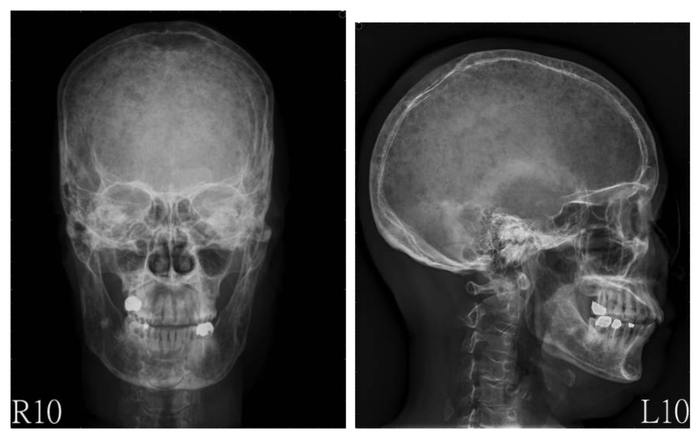
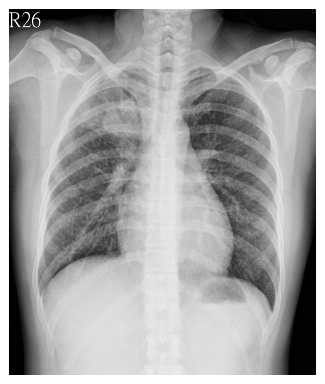
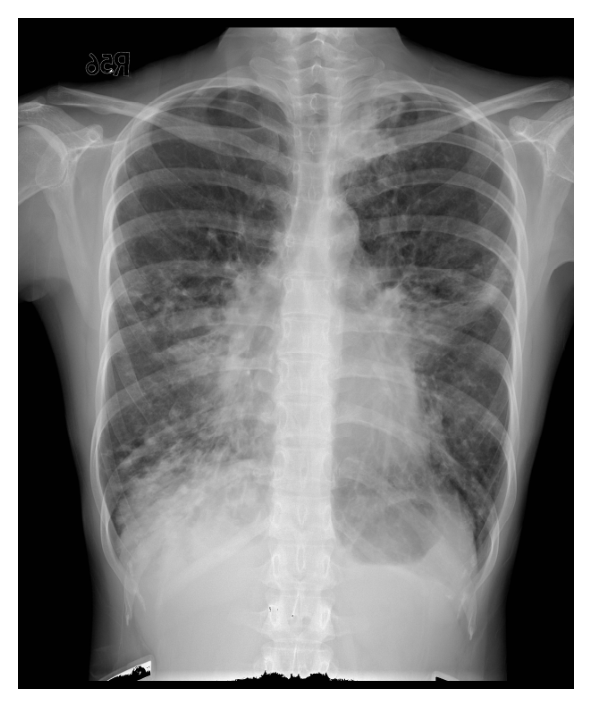
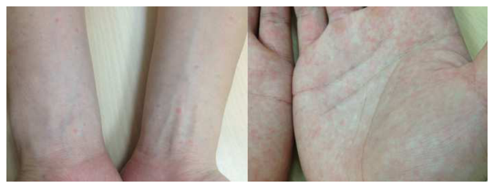
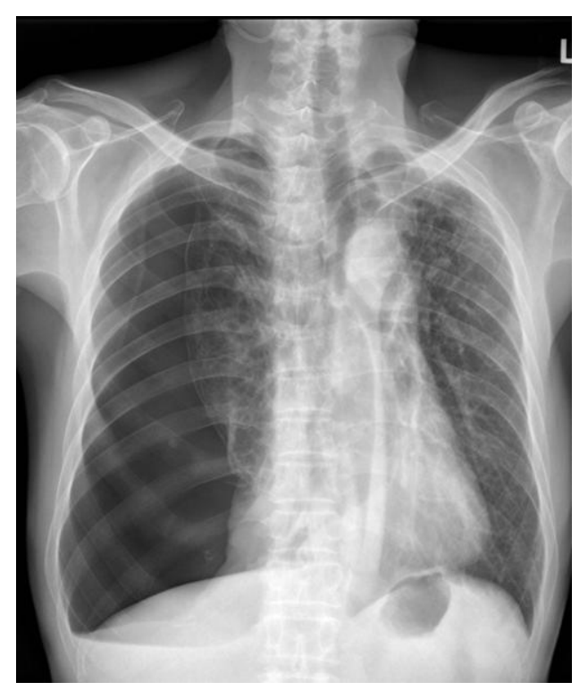

開卷有益 ／
醫師 ／ 醫學（三）（包括內科、家庭醫學科等科目及其相關臨床實例與醫學倫理） ／ 106 年第 1 次106 年第 1 次醫師醫學（三）（包括內科、家庭醫學科等科目及其相關臨床實例與醫學倫理）試題與答案
這一頁是民國 106 年第 1 次醫師醫學（三）（包括內科、家庭醫學科等科目及其相關臨床實例與醫學倫理）的整份歷屆試題，共 80 題，題目與標準答案出自考選部「國家考試試題及測驗式試題答案」開放資料，其中 80 題附有詳解。以下逐題列出題幹、選項與答案；要計時作答或記錄成績，請用線上練習。
考選部原始場次代碼：106020
線上作答這一科 →
全部 80 題
第 1 題
75歲的李女士這幾個月來家人發現她都不太喜歡出門，沒有活力，感覺相當健忘、睡得不好、食慾不佳、體重減少、常有呼吸困難、胸口悶、全身不舒服，家人帶她至門診評估。下列敘述何者錯誤？
（A） 老年人憂鬱症常伴隨認知功能的症狀，而被認為是「假性失智症」（B） 甲狀腺機能低下或亢進的病人可能都會伴隨憂鬱的症狀，所以懷疑憂鬱的病人應該測量甲狀腺功能（C） 藥物治療6～8週後，大約60～70%的病人可以得到控制（D） SSRI（selective serotonin reuptake inhibitor）類的抗憂鬱藥品比TCA（tricyclic antidepressant）類的藥品更加有效答案：（D）
詳解與考點 正解：「何者錯誤」。老年憂鬱症的治療選擇要同時考慮療效與耐受性；SSRI 因抗膽鹼與心血管副作用通常較少而常被優先考慮，但不能概括為比 TCA 更有效，故 D 錯誤。
A：老年憂鬱症可出現注意力與記憶抱怨，臨床上常稱假性失智症（pseudodementia），敘述正確。
B：甲狀腺功能亢進或低下皆可能有憂鬱症狀，評估疑似憂鬱時檢查甲狀腺功能有助排除可逆病因，敘述正確。
C：抗憂鬱藥的反應須經數週評估，許多病人在足量治療後可改善；此敘述與一般治療觀念相符，故非答案。
本題考點：老年憂鬱症（late-life depression）；假性失智症（pseudodementia）；SSRI 與 TCA（tricyclic antidepressant）的療效與耐受性比較。
第 2 題
52歲男性病人過去並無高血壓或心臟病，近半年來運動時呼吸困難逐漸加重且有下肢水腫。經檢查肝腎功能正常，給予利尿劑治療，頸靜脈仍有顯著擴張。門診胸部X光顯示心臟並未擴大，身體診察無心雜音，肝臟稍腫大，有腹水及雙側下肢水腫。心導管檢查右心房平均壓力是15mmHg（正常＜8 mmHg），右心房壓力曲線呈現明顯的Y下降波。本病人另外可能出現下列那一種徵狀（sign）？
（A） 血壓上升且脈搏壓變寬（B） 呼氣時，頸動脈擴張可能更形顯著（C） 少數病例聽診時會有心包敲擊音（pericardial knock），有些會出現｢奇脈｣（paradoxical pulse）（D） 胸部X光片呈現肺鬱血（lung congestion）現象答案：（C）
詳解與考點 正解：右心衰竭徵象、心臟未擴大與右心房壓力曲線明顯 Y 下降波，指向縮窄性心包膜炎（constrictive pericarditis）。僵硬心包膜限制舒張充填，可有心包敲擊音，部分病人也可出現奇脈，故選 C。
A：縮窄性心包膜炎的問題是心室舒張充填受限，不會以血壓上升且脈搏壓變寬為典型表現。
B：頸靜脈壓在吸氣時反而不適當上升是 Kussmaul sign；題幹所述頸動脈隨呼氣更擴張不是本病的典型徵象。
D：縮窄性心包膜炎以全身靜脈鬱血為主，肺鬱血通常不突出；它看似與心衰竭相符，卻忽略了本病是右側鬱血較明顯。
本題考點：縮窄性心包膜炎（constrictive pericarditis）；頸靜脈壓波形（jugular venous pressure waveform）；心包敲擊音（pericardial knock）。
第 3 題
32歲女性突然覺得心跳很快，這是本週第二次出現，第一次出現在數分鐘之後自行停止。這次已經持續半個小時，當她到達急診時，血壓120/70毫米汞柱，呼吸每分鐘十四次，氧合濃度百分之九十八（沒有使用氧氣），心電圖出現窄波規則心率，每分鐘一百八十次。此心律不整經給予頸動脈竇按摩及Valsalva maneuver，心跳並沒有下降。接下來給予何種藥物為佳？
（A） verapamil 2.5到 5 mg，一分鐘靜脈注射完畢（B） digoxin 0.5 mg，靜脈緩慢注射（C） adenosine 6 mg，靜脈快速注射（D） diltiazem 0.25 mg/kg，一分鐘靜脈注射完畢答案：（C）
詳解與考點 正解：血流動力學穩定的規則窄 QRS 心搏過速，且迷走神經刺激無效，最符合陣發性上心室頻脈（paroxysmal supraventricular tachycardia）。adenosine 以快速靜脈注射暫時阻斷房室結傳導，是此情境的標準下一步，故選 C。題內劑量屬急性心律不整處置，實際給藥仍須依當下監測與禁忌症判斷。
A：verapamil 可抑制房室結傳導，但通常不是迷走刺激無效後最優先的診斷與終止用藥，且須留意低血壓與特定心律不整風險。
B：digoxin 起效較慢，較不適合作為急診中穩定規則窄 QRS 心搏過速的即時終止藥物。
D：diltiazem 也能抑制房室結，但在此典型情境 adenosine 起效更快、診斷與治療價值更直接，故不是最佳選項。
本題考點：陣發性上心室頻脈（paroxysmal supraventricular tachycardia）；房室結（atrioventricular node）；adenosine 的急性終止作用。
第 4 題
有位55歲男性接受一般健檢時被意外發現 hemoglobin 6.0 g/dL（正常值13～17），MCV = 70 fL（正常值77～102），RBCcount = 200×104/mm3（正常值400～552×104）。仔細詢問病史，他並沒有明顯的活動性氣促（dyspnea on exertion,DOE），但最近確實感到較無力，爬樓梯不能一口氣爬上四樓。他食慾如常，大便習慣並未改變，顏色也與平常差不多。下列各項敘述，何者錯誤？
（A） 他的貧血病因應該不是thalassemia（B） hemoglobin electrophoresis應非需要優先安排檢查之項目（C） 應予以檢查大便潛血反應（fecal occult blood test, FOBT）（D） 不需要安排大腸檢查答案：（D）
詳解與考點 正解：55歲男性的嚴重小球性貧血，hemoglobin 6.0 g/dL、MCV 70 fL 與 RBC count 偏低，較應考慮缺鐵及慢性失血。成年男性若有缺鐵性貧血，即使無肉眼便血，也須評估腸胃道失血來源，因此「不需要安排大腸檢查」錯誤，故選 D。
A：thalassemia 常見小球性貧血但 RBC count 往往相對保留或偏高；本例 RBC count 明顯低，較不支持它是主要病因。
B：因病史與血球型態先支持缺鐵及失血，hemoglobin electrophoresis 通常不是最優先檢查，敘述合理。
C：FOBT 可作為偵測腸胃道隱性出血的初步檢查；它看似在沒有排便改變時多餘，但嚴重缺鐵性貧血仍應尋找失血來源。
本題考點：小球性貧血（microcytic anemia）；缺鐵性貧血（iron deficiency anemia）；腸胃道隱性出血（occult gastrointestinal bleeding）。
第 5 題
45歲的秦先生被家屬勸來醫院。他們帶來秦先生的各項檢查結果，並轉述之前醫師的說法，認為秦先生有明顯的酒精性肝傷害，要你說服他戒酒。家屬所提供的數據皆支持秦先生有酒精性肝傷害，除了：
（A） alanine aminotransferase（ALT）< aspartate aminotransferase（AST）（B） 血中γ-GT數值偏高（C） 超音波顯示有脂肪肝（fatty liver）現象（D） ALT>2000 U/L（normal：0～40）答案：（D）
詳解與考點 正解：找出「不支持」酒精性肝傷害的資料。酒精性肝炎的轉胺酶通常為中度上升，AST 常高於 ALT；ALT 超過 2000 U/L 的極高度上升反而要優先考慮缺血、病毒或藥物性急性肝損傷等原因，故選 D。
A：酒精性肝傷害常呈 AST 高於 ALT 的型態，故 ALT 小於 AST 支持酒精相關病因。
B：γ-GT 偏高可見於長期飲酒與肝膽酵素誘導，雖不具特異性，仍可作為支持資料之一。
C：脂肪肝是飲酒者常見的影像表現，與酒精性肝傷害相容，但單靠超音波不能判定病因。
本題考點：酒精性肝傷害（alcohol-associated liver disease）；轉胺酶型態（aminotransferase pattern）；急性肝細胞損傷（acute hepatocellular injury）。
第 6 題
56歲的男性，腎病症候群病史，最近2天嘔吐因此沒有吃利尿劑。身體診察有中度的全身水腫，動脈血氣體pH 7.48，PaCO247 mmHg，HCO3- 34 mEq/L，血液osmolality 255 mOsmol/kg H2O，BUN 30 mg/dL，肌酸酐1.5 mg/dL，Na 120 mmol/L。尿液Na+ 30 mmol/L，尿液Cl- 8 mmol/L。下列敘述何者錯誤？
（A） 病人的細胞外液量增加（B） 病人的細胞內液量增加（C） 病人的有效血液容量增加（D） 病人的有效血液容量減少答案：（C）
詳解與考點 正解：腎病症候群的全身水腫與低張性低血鈉。水腫表示細胞外液量增加；血漿滲透壓 255 mOsmol/kg H2O 低於細胞內液，水進入細胞使細胞內液也增加。然而有效動脈血液容量受第三間隙與低白蛋白血症影響而下降，不是增加，故錯誤的是 C。
A：中度全身水腫代表細胞外液累積，敘述正確。
B：低張性低血鈉使水由細胞外移入細胞內，細胞內液量增加，敘述正確。
D：腎病症候群可有總體液過多卻有效動脈血液容量下降的表現，這是本題最易混淆之處，敘述正確。
本題考點：有效動脈血液容量（effective arterial blood volume）；腎病症候群（nephrotic syndrome）的水腫；低張性低血鈉（hypotonic hyponatremia）。
第 7 題
26歲女性病人，最近一週有多喝和多尿。體重50公斤，血液osmolality 290 mOsmol/kg H2O，Na 140 mmol/L，K 3.8mmol/L。尿液osmolality 200 mOsmol/kg H2O，限水試驗2小時之體重47公斤，尿液osmolality 290 mOsmol/kg H2O，給予ADH（DDAVP）後2小時內最高的尿液osmolality 320 mOsmol/kg H2O。下列敘述何者最正確？
（A） 最可能的診斷是原發性多飲症（primary polydipsia）（B） 治療使用限水（C） 治療使用thiazides（D） 最可能的診斷是中樞型尿崩症（central diabetes insipidus）答案：（C）
詳解與考點 正解：限水後尿滲透壓由 200 升至 290 mOsmol/kg H2O，給 DDAVP 後僅再升至 320 mOsmol/kg H2O。限制水分時仍無法充分濃縮尿，且對 ADH 反應不大，較符合腎性尿崩症（nephrogenic diabetes insipidus）；thiazides 可藉輕度容積收縮增加近端水鈉再吸收而減少尿量，故選 C。
A：原發性多飲症在限制水分後通常能明顯濃縮尿液，與本例濃縮能力不足不符。
B：限水是原發性多飲症的處置方向，尿崩症病人若任意限水反會加劇脫水，故不適當。
D：中樞型尿崩症給 DDAVP 後尿滲透壓通常會有較明顯上升；本例反應有限，是它看似尿崩症卻支持腎性而非中樞型的關鍵。
本題考點：水剝奪試驗（water deprivation test）；腎性尿崩症（nephrogenic diabetes insipidus）；thiazide 治療（thiazide therapy）。
第 8 題
30歲男病人主訴左手第2、3指及右手3、4指的遠端指骨關節（distal interphalangeal joint）紅腫熱痛已3星期。同時兩側下肢的皮膚也出現了許多突出會脫屑的紅疹塊。最可能的診斷為何？
（A） 類風濕性關節炎（B） 細菌性關節炎（C） 全身性紅斑性狼瘡（D） 乾癬性關節炎答案：（D）
詳解與考點 正解：遠端指間關節炎合併下肢界線明顯、脫屑的斑塊，分別提示乾癬性關節炎與皮膚乾癬。乾癬性關節炎常侵犯 DIP，與鱗屑性乾癬皮疹相結合最具辨識力，故選 D。
A：類風濕性關節炎較常侵犯 MCP、PIP 與腕關節，通常不以 DIP 為主，亦無典型脫屑乾癬斑塊。
B：細菌性關節炎多為急性單一大關節，合併多處對稱 DIP 病灶及慢性鱗屑皮疹並不典型。
C：全身性紅斑性狼瘡可有關節痛，但多為非侵蝕性關節炎，皮膚表現也非題幹所述的典型乾癬鱗屑斑塊。
本題考點：乾癬性關節炎（psoriatic arthritis）；遠端指間關節（distal interphalangeal joint）；皮膚乾癬（psoriasis）。
第 9 題
一位27歲男性因為牙齦出血不止來到醫院，血液檢查發現血紅素為8.2 gm/dL，白血球1250/µL，其中promyelocyte 18%，segmented neutrophil 2%，monocytes 8%，lymphocytes 72%，血小板21000/µL。骨髓穿刺檢查證明為acute promyelocyticleukemia。下列各選項，何者是治療此病人所必須的？ ①platelet transfusion ②chemotherapy ③all-trans retinoic acid
（A） ①②（B） ②③（C） ①③（D） ①②③答案：（D）
詳解與考點 正解：官方答案為 D。本例急性早幼粒細胞白血病（acute promyelocytic leukemia, APL）合併牙齦持續出血、血小板 21000/µL 與重度嗜中性白血球低下；依該題年代及選項設定，須給予血小板支持、all-trans retinoic acid（ATRA）與化學治療，故三項皆必要。惟現行非高風險 APL 可採 ATRA 合併 arsenic trioxide 而不使用傳統化學治療。
A：①②漏掉 ATRA。APL 的分化治療具有關鍵地位，不能只輸血小板與化學治療。
B：②③漏掉血小板輸注；本例已有持續出血且血小板極低，支持性輸血處置不可缺少。
C：①③在本題年代的選項設定下漏掉化學治療。
本題考點：急性早幼粒細胞白血病（acute promyelocytic leukemia）；all-trans retinoic acid（ATRA）；arsenic trioxide；出血支持治療（supportive transfusion therapy）。
第 10 題
一位68歲女性被發現有蛋白尿，抽血檢查顯示血紅素8.7 gm/dL，白血球及血小板正常，白蛋白3.3 gm/dL，球蛋白1.8gm/dL，Cr 1.7 mg/dL，尿中Bence-Jones protein陽性，頭部X-光如圖所示。此病人最可能的診斷為？

（A） multiple myleoma（B） carcinoma with bone metastasis（C） anemia secondary to chronic kidney disease（D） Paget’s disease答案：（A）
詳解與考點 正解：此68歲女性有貧血、腎功能受損、蛋白尿且尿中 Bence-Jones protein 陽性；頭顱 X 光顯示瀰漫性顱骨骨質異常，但本圖未清楚呈現界線分明的典型 punched-out lesions；官方答案為 A，診斷主要由貧血、腎功能受損及 Bence-Jones protein 陽性的整體表現支持。這是漿細胞異常增生造成骨質溶解的表現，合併輕鏈尿所致腎損傷，最符合（A）multiple myeloma，故選 A。
B：轉移性癌也可造成溶骨性骨病灶，因此乍看會與本圖的多發病灶混淆；但本題同時有單株免疫球蛋白輕鏈相關的 Bence-Jones protein 尿，較直接支持漿細胞疾病。多發性骨髓瘤的顱骨 punched-out lesions 與此整體表現更相符。
C：慢性腎臟病可引起腎性貧血，也可能造成蛋白尿與肌酸酐上升，但無法解釋尿中 Bence-Jones protein 陽性及顱骨多發界線清楚的溶骨性病灶；腎功能異常在本題較可能是骨髓瘤相關腎病變的一部分。
D：Paget’s disease 的顱骨影像常見骨質增厚、骨小梁粗化與混合性溶骨或硬化改變，並非本圖所示的多發 punched-out 溶骨性透亮病灶；它也不能解釋輕鏈尿與貧血的組合。
本題考點：多發性骨髓瘤（multiple myeloma）常見貧血、腎功能受損、Bence-Jones protein 尿及溶骨性病灶；punched-out lesions 是顱骨 X 光的典型表現；免疫球蛋白輕鏈（free light chain）可造成腎臟損傷與蛋白尿。
第 11 題
林老太太因為咳嗽兩個月且體重減輕，至門診就醫，胸部X光如圖所示，最可能的診斷為：

（A） 黴漿菌肺炎（B） 支氣管擴張症（C） 肺癌（D） 肺氣腫答案：（C）
詳解與考點 正解：胸部 X 光在右上肺野可見局灶性、較濃的不規則陰影，並非兩側對稱的瀰漫性病灶；結合高齡者咳嗽 2 個月且有體重減輕，須優先懷疑肺癌（lung cancer）。肺癌可表現為肺門或周邊腫塊、局部肺葉不張或阻塞後浸潤陰影；局部右上肺野異常與全身警訊症狀相符，故選 C。
A：黴漿菌肺炎（Mycoplasma pneumonia）常見較廣泛的間質性或斑片狀浸潤，臨床上多有急性或亞急性的發燒、倦怠等感染表現。雖然 X 光與症狀有時不成比例，但本題的右上肺局灶性異常合併持續咳嗽與體重減輕，更須先排除惡性腫瘤，而非以非典型肺炎解釋。
B：支氣管擴張症（bronchiectasis）的 X 光可見支氣管壁增厚形成的軌道狀陰影、環狀陰影，或反覆感染造成的下肺野改變；其典型病史是長期大量膿痰與反覆呼吸道感染。本圖沒有以多發環狀或軌道狀陰影為主，臨床關鍵也不是慢性化膿性痰咳，故不符。
D：肺氣腫（emphysema）應呈現雙側肺野過度透亮、肺容積增加、橫膈下降變平及心影狹長等過度充氣徵象；本圖反而有右上肺野局灶性不透光陰影，沒有肺氣腫的典型雙側過度充氣表現，故不符。
本題考點：肺癌（lung cancer）的警訊症狀包括持續咳嗽、體重減輕與局灶性胸部影像異常；胸部 X 光的局灶性肺野陰影須考慮腫瘤及其造成的阻塞後變化；肺氣腫（emphysema）以雙側過度充氣與肺野透亮增加為典型影像表現。
第 12 題
邱女士，因有大量濃痰和咳血至門診就醫，胸部X光如圖所示，最正確的診斷為：

（A） 肺栓塞（pulmonary embolism）（B） 支氣管擴張症（bronchiectasis）（C） 肺癌（lung cancer）（D） 肺纖維化（lung fibrosis）答案：（B）
詳解與考點 正解：病人有大量濃痰及咳血，胸部 X 光可見雙側肺門周圍至下肺野的粗亂支氣管血管紋理與斑片狀陰影；本圖未清楚顯示典型環狀或管狀陰影，反映支氣管長期擴張及管壁增厚；這種臨床表現與影像分布最符合（B）支氣管擴張症（bronchiectasis）。支氣管擴張後黏液清除不良，易反覆感染而有膿痰；發炎破壞支氣管壁附近血管，則可造成咳血。
A：肺栓塞（pulmonary embolism）常以突發呼吸困難、胸痛或低氧血症表現，胸部 X 光往往正常或僅有非特異變化；圖中的雙側粗亂肺紋理與斑片狀陰影及大量濃痰，均不支持此診斷。
C：肺癌（lung cancer）可造成咳血，但 X 光通常尋找局部腫塊、肺門腫大、肺不張或阻塞後肺炎等較局限病灶；本圖以雙側、下肺野較明顯的粗亂與斑片狀陰影為主，且大量濃痰的病史較符合支氣管擴張症。
D：肺纖維化（lung fibrosis）主要呈現瀰漫性網狀陰影、肺容積減少及晚期蜂窩肺，症狀多為漸進性乾咳與呼吸困難；它不能恰當解釋本圖的管狀與環狀支氣管陰影，也不符合大量膿痰的典型表現。
本題考點：支氣管擴張症（bronchiectasis）——支氣管不可逆擴張造成黏液滯留、反覆感染與大量膿痰；咳血（hemoptysis）可由慢性發炎使支氣管循環血管增生、脆弱而出血；胸部 X 光可見粗亂支氣管紋理、管狀或環狀陰影，必要時以高解析胸部電腦斷層（high-resolution computed tomography, HRCT）確認。
第 13 題
50歲男性業務經理，因倦怠、性慾減少、陽痿來診。病人已婚育有一子20歲，自覺症狀自5年前開始每況愈下。病人自認工作勝任愉快、夫妻關係良好。經泌尿科診治，抽血檢查：FSH 2 mIU/mL，LH 1 mIU/mL，testosterone 0.4 ng/mL皆比正常人為低，給予睪固酮注射症狀改善。下列敘述何者最為恰當？
（A） 此為男性更年期，可以睪固酮症狀治療（B） 睪丸應小而硬（C） 應測定血中乳促素（prolactin）濃度（D） 應以超音波測量陰莖血流答案：（C）
詳解與考點 正解：testosterone、FSH、LH 都低，屬低促性腺激素性性腺功能低下（hypogonadotropic hypogonadism），病灶應優先考慮下視丘或腦下垂體。prolactin 過高可抑制 GnRH 並造成此軸功能低下，故應測定血中 prolactin，選 C。
A：不能只以男性更年期解釋，因為低 FSH、LH 指向中樞性病因，應先完成病因評估而非僅症狀治療。
B：原發性睪丸衰竭才常見睪丸小且可能偏硬並伴隨 FSH、LH 上升；本例促性腺激素低，不符。
D：陰莖血流檢查適用於懷疑血管性勃起障礙；本例已有清楚內分泌異常，優先順序較低。
本題考點：低促性腺激素性性腺功能低下（hypogonadotropic hypogonadism）；高泌乳激素血症（hyperprolactinemia）；下視丘－腦下垂體－性腺軸（hypothalamic-pituitary-gonadal axis）。
第 14 題
32歲男性病患，過去身體健康良好。此次因為近一日來四肢無力到急診求診。診視時發現病患在病床上意識清醒，呼吸正常，心跳為每分鐘 124次，規則；血壓120/78 mmHg；四肢無法舉離病床，輕觸和疼痛的感覺雙側相同，深部肌腱反射（deeptendon reflex）下降。實驗室檢驗發現血鉀為1.5 meq/L；血中 creatine kinase 671 IU/L（參考值，38～174 IU/L）；甲狀腺刺激素（thyroid stimulating hormone）為 0.013 µIU/mL（參考值，0.35～5.5 µIU/mL） 和游離T 4甲狀腺素（free T4thyroxine）為4.51 ng/dL（參考值，0.89～1.80 ng/dL）。此病患最有可能的診斷為何?
（A） 原發性皮質醛酮過多症（primary aldosteronism）（B） 甲狀腺毒性週期性麻痹症（thyrotoxic periodic paralysis）（C） 利尿劑使用過多（D） 第一型及第二型腎小管酸血症（renal tubular acidosis）答案：（B）
詳解與考點 正解：突發四肢無力、血鉀 1.5 mEq/L、反射下降，且 TSH 抑制並有 free T4 升高，表示甲狀腺毒症合併低血鉀性麻痺。甲狀腺毒性週期性麻痺症是細胞內鉀離子移入造成的低血鉀與肌無力，故選 B。
A：原發性皮質醛酮過多症可有低血鉀，但通常伴隨高血壓，且不能解釋明顯甲狀腺毒症。
C：利尿劑過量可導致低血鉀，但題幹未述使用史，也無法合理解釋 TSH 低與 free T4 高。
D：第一型及第二型腎小管酸血症可造成低血鉀，但會以代謝性酸中毒為線索，與本例甲狀腺毒症型態不符。
本題考點：甲狀腺毒性週期性麻痺症（thyrotoxic periodic paralysis）；低血鉀（hypokalemia）；甲狀腺毒症（thyrotoxicosis）。
第 15 題
30歲本國籍未婚男性，有多位男女性伴侶；最近無服用藥物、出國旅遊或飼養寵物情形。五天來發現陸續身上出現紅疹與無痛或癢感的雙手病灶（如圖）；生殖器無特殊病灶，亦無發燒情形。下列何者為此病人最可能的致病原？

（A） Streptococcus pyogenes（B） Treponema pallidium（C） Dengue virus（D） Measles virus答案：（B）
詳解與考點 正解：有多位性伴侶是性傳染感染的風險因子；圖中可見兩側前臂、腕部及一側手掌有散在淡紅色皮疹；軀幹並未呈現在圖中，而患者沒有痛癢或發燒。這種累及手掌的非搔癢性全身皮疹，符合第二期梅毒（secondary syphilis）的典型表現；其致病原為（B）所指的梅毒螺旋體（Treponema pallidum），故選 B。
A：Streptococcus pyogenes 可造成猩紅熱（scarlet fever），常有發燒、咽喉炎及觸感粗糙如砂紙的瀰漫性紅疹；本例無發燒，且圖示手掌病灶與無痛癢的性傳染病相關皮疹較相符，故非最可能。
C：Dengue virus 引起登革熱時，多有急性發燒、頭痛、肌肉關節痛等全身症狀，皮疹通常隨發燒病程出現；本例病程中無發燒，亦有明顯性暴露風險，與登革熱不符。
D：Measles virus 所致麻疹以發燒、咳嗽、流鼻水、結膜炎及由臉部向下蔓延的斑丘疹為典型；本例無前驅呼吸道症狀或發燒，且圖中可見手掌受累，故不支持麻疹。
本題考點：第二期梅毒（secondary syphilis）常在初期病灶後出現全身性、通常不痛不癢的斑丘疹，手掌與足底受累是重要線索；梅毒螺旋體（Treponema pallidum）經性接觸傳播，病史與皮疹分布須合併判讀。
第 16 題
一35歲過去無特殊病史之已婚女性，因兩天的發燒、頻尿、左腰痛求診。急診所做血液培養：Staphylococcus epidermidis（只在一瓶需氧血液培養瓶長出；另一瓶厭氧瓶及另一套血液培養，則無細菌生長）; 尿液常規有膿尿症，尿液培養：Escherichia coli （菌量＞100,000 CFU/mL），腎臟超音波無特殊發現。此時最適當臨床處置為何？
（A） 安排心臟超音波，尋找感染性心內膜炎之證據（B） 依血液培養報告選擇抗生素，積極治療S. epidermidis菌血症（C） 依尿液培養報告選擇抗生素，治療E. coli泌尿道感染（D） 依血液與尿液培養報告選擇抗生素，同時治療S. epidermidis菌血症與E. coli泌尿道感染答案：（C）
詳解與考點 正解：發燒、頻尿、左腰痛、膿尿及尿液 E. coli 大量生長，符合有症狀的上泌尿道感染。S. epidermidis 僅在一瓶需氧血液培養長出、其餘培養陰性，較像採檢時皮膚常在菌污染；應依尿液培養選擇抗生素治療 E. coli，故選 C。
A：感染性心內膜炎通常需有持續菌血症或相符臨床線索；單瓶 S. epidermidis 陽性不足以支持立即安排心臟超音波。
B：把單瓶 S. epidermidis 當成真菌血症會導致不必要的抗生素治療，忽略真正有症狀且量大的尿液 E. coli。
D：同時治療兩者看似較全面，卻把最可能的污染菌誤當致病菌，增加不必要用藥。
本題考點：血液培養污染（blood culture contamination）；凝固酶陰性葡萄球菌（coagulase-negative staphylococci）；急性腎盂腎炎（acute pyelonephritis）。
第 17 題
有關冠心症心肌缺氧之敘述，下列何者錯誤？
（A） 心肌缺氧（myocardial ischemia）是因為心臟氧氣的供應，不足以應付新陳代謝的需求（B） 穩定性心絞痛患者，其胸痛可能持續數小時之久（C） 不穩定心絞痛患者，其胸痛有可能是在休息狀態下發作（D） 有些患者心肌缺氧發作時，僅有下巴、脖子、肩膀或手臂不適，而無胸痛答案：（B）
詳解與考點 正解：「何者錯誤」。穩定性心絞痛由可預期的需求缺血引起，休息或舌下硝酸甘油後通常在短時間內緩解；胸痛若持續數小時，應警覺急性冠心症或其他診斷，不是穩定型典型表現，故選 B。
A：心肌缺氧是氧供應與心肌代謝需求失衡，敘述正確。
C：不穩定心絞痛可於休息時發作，反映缺血門檻下降，敘述正確。
D：心肌缺氧可呈現非典型症狀，如下巴、頸部、肩膀或手臂不適而未必有典型胸痛，敘述正確。
本題考點：心肌缺氧（myocardial ischemia）；穩定性心絞痛（stable angina）；不穩定心絞痛（unstable angina）。
第 18 題
下列有關心雜音（heart murmur）之敘述，何者錯誤？
（A） 正常健康的人不應該有心雜音（B） 收縮期雜音在第一心音之時或稍後，而結束於接下來的第二心音或稍前（C） 當頸動脈搏動（upstroke）時，其心雜音為收縮期雜音；頸動脈下沉時，其心雜音為舒張期雜音（D） 舒張期雜音發生於第二心音之時或稍後，而結束於接下來的第一心音或稍前答案：（A）
詳解與考點 正解：「何者錯誤」。正常健康者也可聽到生理性或無害性心雜音，例如血流加快時的收縮期射出性雜音；因此不能說健康者不應有任何心雜音，故選 A。
B：收縮期位於第一心音與第二心音之間，與此選項描述相符。
C：頸動脈上升支對應心室收縮期，若雜音與其同步為收縮期；頸動脈下沉時段則對應舒張期，敘述正確。
D：舒張期由第二心音後開始，到下一個第一心音前結束，與選項相符。
本題考點：心雜音（heart murmur）；生理性心雜音（innocent murmur）；心動週期（cardiac cycle）。
第 19 題
下列有關ST節段上升的心肌梗塞（ST-elevation myocardial infarction，STEMI）的敍述，何者錯誤？
（A） 病態生理學為血管內粥狀硬化斑瑰破裂，產生急性血栓將血管完全阻塞（B） 心肌肌鈣蛋白（cardiac troponin）升高，通常可持續一週（C） 通常到院前死亡是因為急性心衰竭（D） 下壁心肌梗塞（inferior wall myocardial infarction）病患例行要做右前胸壁心電圖答案：（C）
詳解與考點 正解：STEMI 的院前死亡原因。急性冠心症早期院前猝死主要與致命性心律不整，尤其心室顫動有關，而非通常由急性心衰竭造成，故錯誤的是 C。
A：STEMI 常因動脈粥樣硬化斑塊破裂後形成血栓並急性阻塞冠狀動脈，敘述正確。
B：cardiac troponin 上升可持續多日，通常約可延續一週，敘述正確。
D：下壁心肌梗塞可能合併右心室梗塞，右前胸導程心電圖有助辨識，故屬合理評估。
本題考點：ST 節段上升心肌梗塞（ST-elevation myocardial infarction, STEMI）；院前心因性猝死（pre-hospital cardiac death）；心室顫動（ventricular fibrillation）。
第 20 題
下列何者不是造成動脈粥狀硬化的主要危險因子？
（A） 高血壓（B） 喝酒（C） 抽菸（D） 血漿高密度脂蛋白膽固醇（HDL cholesterol）過低（小於40 mg/dL）答案：（B）
詳解與考點 正解：「不是」動脈粥狀硬化的主要危險因子。高血壓、抽菸與低 HDL cholesterol 都會促進動脈粥狀硬化；喝酒並非教科書列出的主要危險因子，故選 B。
A：高血壓會造成血管內皮受損與血流剪力增加，促進粥狀斑塊形成，屬重要危險因子，故不是答案。
C：抽菸會造成內皮功能失調並促進血栓形成，是明確的可改變危險因子，故不是答案。
D：低 HDL cholesterol 代表逆向膽固醇運輸的保護作用減少，與粥狀硬化風險上升相關，故不是答案。
本題考點：動脈粥狀硬化危險因子（atherosclerotic cardiovascular risk factors）——高血壓、吸菸與血脂異常會增加風險；高密度脂蛋白膽固醇（HDL cholesterol）偏低是血脂異常的一環。
第 21 題
一位25歲的女性病人因為最近一週發生胸悶而求診，胸悶的發作與活動無關；身體診察時在胸骨旁左下緣可聽見收縮中期滴答聲（mid-systolic click）以及第二度收縮末期雜音（late systolic murmur），下列何項是確認診斷的最佳診斷工具？
（A） 標準12-導程心電圖（B） 胸部X-光片（C） 電腦斷層檢查（D） 心臟超音波答案：（D）
詳解與考點 正解：收縮中期滴答聲（mid-systolic click）合併收縮晚期雜音是二尖瓣脫垂（mitral valve prolapse）的典型聽診線索。心臟超音波可直接顯示二尖瓣瓣葉在收縮期向左心房膨出，並評估是否合併逆流，為確認診斷的最佳工具，故選 D。
A：標準 12-導程心電圖可協助評估心律或缺血，但不能直接確認瓣膜脫垂；它看似是胸悶的常規初步檢查，卻不是本題所問的確診工具。
B：胸部 X-光片可觀察心影及肺部鬱血，對單純二尖瓣脫垂常無特異性，不能確認瓣膜動態異常。
C：電腦斷層檢查不是此瓣膜病變的首選確診工具，無法取代超音波對瓣葉活動與逆流的即時評估。
本題考點：二尖瓣脫垂（mitral valve prolapse）——典型為 mid-systolic click 與 late systolic murmur；心臟超音波（echocardiography）可確認瓣膜形態及評估二尖瓣逆流。
第 22 題
下列何種藥物不可使用於non-ST elevation myocardial infarction或不穩定心絞痛患者？
（A） aspirin（B） low-molecular-weight heparin（C） unfractionated heparin（D） r-tPA（recombinant tissue plasminogen activator）答案：（D）
詳解與考點 正解：non-ST elevation myocardial infarction 或不穩定心絞痛，亦即非 ST 段上升急性冠心症（NSTE-ACS）。此類病人的標準抗血栓治療包括抗血小板與抗凝血，但不施行纖維蛋白溶解治療；r-tPA 是溶栓藥，在 NSTE-ACS 無效且會增加出血風險，故選 D。
A：aspirin 抑制血小板 thromboxane A2 生成，是 NSTE-ACS 的基本抗血小板治療，故可使用。
B：low-molecular-weight heparin 可抗凝並降低血栓進展風險，為 NSTE-ACS 可用的抗凝血選項。
C：unfractionated heparin 同樣可用於 NSTE-ACS 的抗凝血治療，特別是在需要快速調整或介入治療的情境。
本題考點：非 ST 段上升急性冠心症（NSTE-ACS）——治療核心為抗血小板與抗凝血；纖維蛋白溶解治療（fibrinolysis）適用於特定 ST 段上升心肌梗塞情境，非 NSTE-ACS。
第 23 題
有關單獨二尖瓣狹窄（isolated mitral stenosis）之敘述，何者正確？
（A） 大多數病患狹窄愈嚴重，第一心音（S1）愈弱（B） opening snap如果聽得見，是在心收縮期（C） 感染性心內膜炎在單獨二尖瓣狹窄病患的機率與合併二尖瓣閉鎖不全病患相同（D） 臨床症狀除運動時呼吸困難外，有時會出現咳血、肺栓塞或肺炎等答案：（D）
詳解與考點 正解：官方答案為 D。單獨二尖瓣狹窄（isolated mitral stenosis）使左心房壓升高，造成肺靜脈鬱血，可引起活動性呼吸困難、咳血與反覆肺部感染；惟肺栓塞不是左心房血栓或肺靜脈鬱血可直接推得的典型併發症，僅能視為少見、間接事件，因此本題選項措辭有爭議。
A：可活動的狹窄二尖瓣關閉時常使第一心音（S1）增強；嚴重鈣化或瓣葉僵硬時才可能減弱，因此不能說狹窄愈嚴重 S1 必愈弱。
B：opening snap 是主動脈瓣關閉後、狹窄二尖瓣於舒張早期被打開所產生，位於心舒張期而非心收縮期。
C：單獨二尖瓣狹窄的高速逆流噴射較少，感染性心內膜炎的風險通常低於合併二尖瓣閉鎖不全者，不能稱機率相同。
本題考點：二尖瓣狹窄（mitral stenosis）——舒張早期 opening snap 與舒張期雜音是重要聽診表現；左心房血栓造成的是系統性栓塞，須與肺鬱血的肺部症狀區分。
第 24 題
一位50歲男性主訴胸部不適與行動時氣促，無高血壓病史，血壓130/80 mmHg，心跳規則每分鐘76次，聽診上有第四心音，但並無明顯雜音，胸部X光片無明顯異常，心電圖呈現左心室肥厚合併ST-T波變化，而心臟超音波呈現嚴重左心尖部肥厚與正常左心室收縮功能。下列何種藥物最不適當？
（A） digitalis（B） beta blockers（C） diltiazem（D） verapamil答案：（A）
詳解與考點 正解：嚴重左心尖部肥厚、左心室收縮功能正常且無高血壓，最符合心尖型肥厚性心肌病（apical hypertrophic cardiomyopathy）。digitalis 為正性變力藥，可能增加心室收縮力與動態性流出道阻塞，不適合作為此類肥厚性心肌病的常規症狀治療，故選 A。
B：beta blockers 可降低心跳與收縮力、延長舒張充填，常用於改善肥厚性心肌病的胸悶與活動性症狀，故非最不適當。
C：diltiazem 為非二氫吡啶類鈣離子阻斷劑，可減慢心跳並改善舒張期充填，在無禁忌時可作為替代治療。
D：verapamil 亦可用於部分肥厚性心肌病患者以改善舒張功能與症狀；它看似會抑制心肌收縮，但與 digitalis 的正性變力及可能惡化阻塞不同。
本題考點：肥厚性心肌病（hypertrophic cardiomyopathy）——可有心尖型表現與舒張功能障礙；治療常用 beta blockers 或非二氫吡啶類鈣離子阻斷劑，避免不必要的正性變力作用。
第 25 題
目前治療C型肝炎的標準療法為何？
（A） 干擾素單獨使用（B） 雷巴威林（ribavirin）單獨使用（C） 干擾素及雷巴威林（ribavirin）合併使用（D） 干擾素與干安能（lamivudine）合併使用答案：（C）
詳解與考點 正解：官方答案為 C；惟題幹的「目前標準療法」具有明確時效爭點。干擾素合併 ribavirin 是早期 C 型肝炎的標準療法，符合此題年代的作答脈絡；現行治療已以直接作用抗病毒藥物（direct-acting antivirals, DAAs）為主，因此本題只能就歷史題庫脈絡選 C。
A：干擾素單獨使用的療效低於（C）干擾素合併 ribavirin，並非當時的標準合併療法。
B：ribavirin 單獨使用無法有效清除 C 型肝炎病毒，需與其他抗病毒治療合併，故不正確。
D：lamivudine 主要用於 B 型肝炎病毒，不能與干擾素合併作為 C 型肝炎的標準療法。
本題考點：C 型肝炎治療（hepatitis C treatment）——早期療法為 interferon 加 ribavirin；直接作用抗病毒藥物（DAAs）已改變現行標準治療，判讀舊題須辨識其年代脈絡。
第 26 題
在臺灣引起肝膿瘍最常見的細菌為何？
（A） 幽門螺旋桿菌（H. pylori）（B） 大腸桿菌（E. coli）（C） 金黃色葡萄球菌（S. aureus）（D） 克雷白氏肺炎桿菌（K. pneumoniae）答案：（D）
詳解與考點 正解：題幹限定「在臺灣」且問細菌性肝膿瘍最常見病原。社區型肝膿瘍在臺灣具有克雷白氏肺炎桿菌（Klebsiella pneumoniae）常見的流行病學特徵，故選 D。
A：幽門螺旋桿菌主要定殖於胃黏膜，與胃炎、消化性潰瘍相關，不是肝膿瘍的常見病原。
B：大腸桿菌可造成膽道相關或腹腔感染，但就臺灣常見肝膿瘍病原而言不及（D）克雷白氏肺炎桿菌。
C：金黃色葡萄球菌可經菌血症播散形成膿瘍，但不是臺灣肝膿瘍最常見的典型病原。
本題考點：化膿性肝膿瘍（pyogenic liver abscess）——臺灣常見病原為 Klebsiella pneumoniae；須與膽道感染常見腸道革蘭陰性菌及血行性金黃色葡萄球菌區分。
第 27 題
中年B型肝炎病人，突然間出現右上腹疼痛、冒冷汗、血壓降低且血紅素降低，最可能的診斷是？
（A） 肝癌破裂（B） 胰臟發炎（C） 胃食道逆流（D） 胃潰瘍答案：（A）
詳解與考點 正解：慢性 B 型肝炎是肝細胞癌的高危險背景；突發右上腹疼痛合併冒冷汗、低血壓與血紅素下降，表示腹腔內急性出血與失血性休克。最能同時解釋肝病背景與出血徵象的是肝癌破裂，故選 A。
B：胰臟發炎可造成上腹痛，但無法典型解釋血紅素下降與低血壓所指向的急性腹腔出血。
C：胃食道逆流可有胸口灼熱或上腹不適，卻不會造成失血性休克與血紅素快速下降。
D：胃潰瘍若出血較常表現為吐血或黑便；雖可能貧血，但在 B 型肝炎病人突發右上腹痛時，較不能解釋此組合。
本題考點：肝細胞癌破裂（ruptured hepatocellular carcinoma）——高危險肝病背景合併突發右上腹痛、休克與血紅素下降，應考慮腹腔內出血。
第 28 題
一位61歲男性慢性B型肝炎病人，經檢查發現在肝臟右葉有兩個肝細胞癌，直徑分別為4公分與3.5公分，左葉亦有一個肝細胞癌，直徑為1.5公分，主肝門靜脈暢通，病人肝功能Child-Pugh分級為A。在臺灣此病人最適當之初步治療方式為何？
（A） 肝腫瘤切除術（B） 標靶藥物治療（C） 肝移植手術（D） 經肝動脈栓塞治療術答案：（D）
詳解與考點 正解：本題有三個肝細胞癌，最大直徑 4 cm，分布於左右兩葉；主肝門靜脈暢通且 Child-Pugh A，代表肝功能保留但腫瘤為多發、雙葉病灶。依題目所給的臺灣初步治療脈絡，經肝動脈栓塞治療術可針對多發且不宜一次完整切除的病灶進行肝動脈導向治療，故選 D。
A：肝腫瘤切除術適合可完整切除且有足夠殘肝的病灶；本題多發、雙葉分布，手術切除的可行性較差。
B：標靶藥物治療多用於不適合局部治療或較晚期的疾病；本題門靜脈暢通、肝功能佳，仍有局部肝動脈治療選項。
C：肝移植可同時處理腫瘤與肝硬化，但本題腫瘤數與大小不符合常用移植選擇準則的典型範圍，故非題設下最適當初步治療。
本題考點：肝細胞癌分期與治療（hepatocellular carcinoma management）——評估腫瘤數目、大小、血管侵犯與肝功能；經肝動脈栓塞治療（transarterial embolization）可用於特定多發肝內病灶。
第 29 題
下列有關幽門螺旋桿菌之敘述，何者正確？
（A） 由於urease test之診斷率過低，因此需以細菌培養來確立診斷（B） 無潰瘍之消化不良患者，若罹有此菌，國際共識認為需要殺菌（C） 將幽門螺旋桿菌殺菌清除後，一定會增加胃食道逆流疾病之機會（D） 胃潰瘍患者之幽門螺旋桿菌之罹患率低於十二指腸潰瘍患者本題送分，無標準答案
詳解與考點 本題官方公告送分。
第 30 題
下列有關消化性潰瘍治療藥物之敘述，何者錯誤？
（A） 制酸劑（antacid）宜與第二型組織胺拮抗劑（H2 receptor antagonist）併用以增加療效（B） 長期服用第二型組織胺拮抗劑可能有陽痿、男性女乳症、月經失調等藥物不良反應（C） 長期服用質子幫浦抑制劑（proton pump inhibitor）可能會增加骨質疏鬆與髖骨骨折之機會（D） 制酸劑會抑制四環素（tetracycline）在胃腸道之吸收答案：（A）
詳解與考點 正解：題目問錯誤敘述。制酸劑會改變胃內 pH，並可能影響第二型組織胺拮抗劑（H2 receptor antagonist）的吸收；兩者不宜以「併用以增加療效」作為原則，故 A 錯誤、選 A。
B：部分 H2 receptor antagonist，尤其 cimetidine，長期使用可因內分泌相關作用出現男性女乳症、性功能或月經異常，敘述方向正確，故不是答案。
C：長期使用質子幫浦抑制劑（proton pump inhibitor）與骨折風險上升有關聯，臨床上應定期檢視適應症，故不是答案。
D：制酸劑可與 tetracycline 螯合而降低其胃腸道吸收，是重要藥物交互作用，敘述正確。
本題考點：消化性潰瘍藥物（peptic ulcer medications）——antacid 會影響其他藥物吸收；H2 receptor antagonist 與 proton pump inhibitor 的不良反應及交互作用是常見考點。
第 31 題
調整飲食為治療胃腸疾病重要的手段，下列有關胃腸疾病與飲食方式調整的敘述，何者錯誤？
（A） gastroparesis患者最好用liquid meals（B） dumping syndrome患者須限制脂肪量（C） irritable bowel syndrome患者可考慮高纖飲食（D） short bowel syndrome患者可進食medium-chain triglyceride答案：（B）
詳解與考點 正解：題目問錯誤的飲食調整。dumping syndrome 的核心是胃排空過快，飲食重點為少量多餐、限制高糖液體，並以較高蛋白質與脂肪比例延緩胃排空；因此一概「限制脂肪量」不合此病的典型飲食原則，故選 B。
A：gastroparesis 胃排空延遲，液體或較細軟的餐點通常較容易通過胃部，作為飲食調整方向合理。
C：irritable bowel syndrome 的飲食需依症狀個別化；部分以便祕為主者可嘗試增加纖維，故「可考慮」高纖飲食並非錯誤。
D：short bowel syndrome 對脂肪吸收不良者可考慮 medium-chain triglyceride，因其吸收途徑與長鏈脂肪酸不同，故非錯誤。
本題考點：胃腸疾病飲食治療（medical nutrition therapy）——gastroparesis 可採易排空餐點；dumping syndrome 重點在減少高糖負荷並調整進食方式；short bowel syndrome 可依吸收狀況調整脂肪來源。
第 32 題
治療慢性腎病（chronic kidney disease）合併之高血壓時，首選藥物為：
（A） 利尿劑（diuretics）（B） 鈣離子阻斷劑（calcium channel blockers）（C） β-阻斷劑（β-blockers）（D） 血管張力素轉化酶阻斷劑（angiotensin-converting enzyme inhibitors）或血管張力素接受器阻斷劑（angiotensin receptorblockers）答案：（D）
詳解與考點 正解：本題以腎素－血管張力素系統阻斷的傳統腎臟保護考點作答。血管張力素轉化酶阻斷劑（angiotensin-converting enzyme inhibitors）或血管張力素接受器阻斷劑（angiotensin receptor blockers）尤其適用於合併白蛋白尿的慢性腎病高血壓，故選 D；題幹未提供蛋白尿資料，不能將其當成既有病人資訊。
A：利尿劑可協助控制容量負荷與血壓；無白蛋白尿時，不能僅因慢性腎病就一概排除其作為初始治療的可能。
B：鈣離子阻斷劑能降血壓；無白蛋白尿時，也可依血壓與共病情況納入初始治療考量。
C：β-阻斷劑適用於合併冠心症、心衰竭或心律問題的病人，但並非慢性腎病高血壓的典型腎臟保護首選。
本題考點：慢性腎病高血壓（hypertension in chronic kidney disease）——腎素－血管張力素系統阻斷（RAAS blockade）在合併白蛋白尿時可降低蛋白尿並延緩腎病惡化；用藥時仍須監測腎功能與血鉀。
第 33 題
一名58歲第5期慢性腎病男性，因胸痛1小時來院求診，身體檢查血壓150/94 mmHg，脈搏每分鐘80次，呼吸每分鐘18 次，心臟聽診有明顯的心包膜摩擦音，下肢微腫，實驗室檢查血鈉135 mmol/L，血鉀5.3 mmol/L，血紅素8.0 g/dL，心電圖呈廣泛性ST-segment上升。下列何項是最根本的治療？
（A） 給予kayexalate（sodium polystyrene sulfonate）降低血鉀（B） 透析（dialysis）（C） 輸血（blood transfusion）（D） 經皮冠狀動脈介入治療（percutaneous coronary intervention）答案：（B）
詳解與考點 正解：第 5 期慢性腎病合併胸痛、心包膜摩擦音與廣泛性 ST-segment 上升，指向尿毒性心包膜炎（uremic pericarditis）。其根本病因是尿毒素累積，透析可清除尿毒素並處理體液與電解質問題，因此是最根本的治療，故選 B。
A：kayexalate 可協助降低血鉀，但血鉀 5.3 mmol/L 並非本題心包膜炎的根本原因，不能取代透析。
C：輸血可改善血紅素 8.0 g/dL 的貧血，卻無法清除造成心包膜炎的尿毒素。
D：廣泛性 ST-segment 上升配合心包膜摩擦音較支持心包膜炎，而非局部冠狀動脈阻塞造成的 ST 段上升心肌梗塞；因此 PCI 不是根本治療。
本題考點：尿毒性心包膜炎（uremic pericarditis）——晚期腎病患者的胸痛、心包膜摩擦音與瀰漫性 ST 段上升是重要線索；透析（dialysis）為針對尿毒症的根本處置。
第 34 題
20歲男性，因下肢水腫住院，血清白蛋白是2.3 g/dL，血中尿素氮和血清肌酸酐各為27/1.2 mg/dL，24小時尿液蛋白質流失測得18 g。腎臟切片病理檢查，發現光學顯微鏡下腎絲球的結構正常。下列敘述何者正確？
（A） 電子顯微鏡下應該看得到電子密集沈積（B） 通常血清補體是正常的（C） 如果治療有效，通常不會再發（D） 通常對類固醇治療的效果不佳，有效果的約只有30%答案：（B）
詳解與考點 正解：年輕病人有大量蛋白尿 18 g／日、低白蛋白血症與水腫，且光學顯微鏡下腎絲球正常，符合微小變化病（minimal change disease）的腎病症候群表現。此病一般無免疫複合體沉積，血清補體通常正常，故選 B。
A：微小變化病的電子顯微鏡典型為足細胞足突廣泛融合，而非電子密集沈積。
C：微小變化病多對類固醇反應良好，但仍可能復發；因此「通常不會再發」過度絕對。
D：微小變化病通常對類固醇治療反應佳，與只有約 30% 有效的說法相反。
本題考點：微小變化病（minimal change disease）——腎病症候群合併正常光學顯微鏡、電子顯微鏡足突融合；血清補體通常正常，且多對類固醇反應良好。
第 35 題
下列有關anti-CCP（anti-cyclic citrullinated peptide antibody）之敘述，何者錯誤？
（A） 多出現在類風濕性關節炎（RA）病患（B） 一般而言此抗體高低與RA疾病的嚴重度相關（C） 此CCP之形成，是由精氨酸（arginine）經由PAD酶轉換成瓜氨酸（citrulline）（D） 使用anti-TNFα治療RA，anti-CCP抗體不會下降本題送分，無標準答案
詳解與考點 本題官方公告送分。
第 36 題
目前診斷Sjögren’s症候群，下列何種條件，可診斷原發性乾燥症（primary Sjögren’s syndrome）？①口乾 ②眼乾③Schirmer's test (+) ④唾液腺體切片異常（超過1 focus淋巴球聚集） ⑤唾液腺功能檢查異常 ⑥血中抗SSA或SSB抗體陽性 ⑦關節疼痛
（A） ①②③④（B） ①②⑤⑦（C） ①②③⑤（D） ①②⑥⑦本題送分，無標準答案
詳解與考點 本題官方公告送分。
第 37 題
下列的何種全身性血管炎會有氣喘病的發作？
（A） Churg-Strauss syndrome（B） Goodpasture’s syndrome（C） essential mixed cryoglobulinemia（D） drug-induced vasculitis答案：（A）
詳解與考點 正解：全身性血管炎合併反覆氣喘是嗜酸性肉芽腫併多血管炎（eosinophilic granulomatosis with polyangiitis, EGPA）的經典線索，舊稱 Churg-Strauss syndrome。其常見表現包含氣喘、嗜酸性球增多、鼻竇疾病及小血管炎，故選 A。
B：Goodpasture’s syndrome 以抗腎絲球基底膜抗體相關的腎炎與肺泡出血為主，並非以氣喘發作為典型表現。
C：essential mixed cryoglobulinemia 可有紫斑、腎炎與周邊神經病變，常與慢性感染或免疫複合體相關，氣喘不是特徵。
D：drug-induced vasculitis 的表現依藥物與血管炎型態而異，沒有 EGPA 那樣具鑑別力的氣喘病史。
本題考點：嗜酸性肉芽腫併多血管炎（EGPA）——氣喘、嗜酸性球增多與血管炎的組合最具辨識性；須與抗 GBM 疾病及冷凝球蛋白血症區分。
第 38 題
32歲男性病人，因反覆發作葡萄膜炎（uveitis）從眼科轉診過來；詳細病史，發現其已有一年多常有口腔潰瘍疼痛的病史，且兩下肢也時常出現有壓痛的皮膚紅疹。但無慢性下背痛的病史，下列那一項檢查，可能具診斷的價值？
（A） pathergy test（B） Schober test（C） Schirmer’s test（D） PPD skin test答案：（A）
詳解與考點 正解：反覆葡萄膜炎、反覆口腔潰瘍與下肢壓痛性紅疹，最符合貝賽特氏病（Behçet disease）。pathergy test 以針刺後出現過度皮膚反應為陽性，對此病具有診斷輔助價值，故選 A。
B：Schober test 用於評估腰椎活動度，主要協助辨識僵直性脊椎炎等脊椎關節病；本題明示無慢性下背痛，且其症候群更符合 Behçet disease。
C：Schirmer’s test 評估淚液分泌，主要用於乾燥症；本題沒有眼乾，眼部問題是葡萄膜炎而非乾眼。
D：PPD skin test 用於結核感染評估，不能作為此組口腔潰瘍、葡萄膜炎與結節性紅斑樣病灶的特異診斷檢查。
本題考點：貝賽特氏病（Behçet disease）——反覆口腔潰瘍、葡萄膜炎與皮膚病灶是重要線索；針刺反應（pathergy test）可提供診斷支持。
第 39 題
一位17歲的女性罹患蕁麻疹已有二年之久。時常會有無預警的發生全身搔癢、紅斑及條痕（erythema and wheal）出現。經服用抗組織胺（anti-histamine）有效，但是無法根除。則下列那一種檢查對疾病的病因追查最有幫忙？
（A） 血清補體值（serum complement level）（B） 嗜伊紅性白血球的總數（total eosinophil count）（C） 抗過敏原IgE抗體的效價（allergen-specific IgE titer）（D） 血清冷凝球蛋白的存在（presence of serum cryoglobulin）答案：（C）
詳解與考點 正解：官方答案為 C。病人有超過 6 週、反覆無預警發作且抗組織胺有效的風團與搔癢，較符合慢性自發性蕁麻疹（chronic spontaneous urticaria）；只有病史提示特定即時型過敏原時，針對性的特異性 IgE（allergen-specific IgE）才有意義。就本題選項而言（C）最接近，但陽性致敏結果不能直接認定為慢性蕁麻疹的病因。
A：血清補體值較有助於懷疑蕁麻疹性血管炎等情況；本題典型風團且抗組織胺有效，沒有優先指向該病。
B：嗜伊紅性白血球總數可反映部分寄生蟲或過敏狀態，但對慢性自發性蕁麻疹通常沒有常規病因追查價值。
D：血清冷凝球蛋白主要用於評估冷凝球蛋白血症等免疫複合體疾病，並非典型慢性蕁麻疹病因追查的優先檢查。
本題考點：慢性自發性蕁麻疹（chronic spontaneous urticaria）以反覆風團與搔癢為主，抗組織胺是症狀治療；特異性 IgE（allergen-specific IgE）僅在病史有相符的即時型暴露線索時配合解讀。
第 40 題
一40歲女士因左乳房腫塊求診。體檢發現單一腫塊，堅實，無觸痛感，邊界不規則及模糊，固定不動於皮膚。在這個階段最適當的檢查為何？
（A） 乳房X光攝影（B） 切除性生檢（excisional biopsy）（C） 乳房X光攝影後切除性生檢（D） PET掃描答案：（C）
詳解與考點 正解：40 歲女性的單一乳房腫塊具有堅實、無痛、邊界不規則且固定於皮膚等惡性警訊；在本題選項限制下，乳房 X 光攝影加切除性生檢兼有影像評估與組織診斷，故選 C。惟現行實務通常還會做目標式超音波，組織取樣多先採 core needle biopsy，切除性生檢不是所有此類病人的標準初始取樣方式。
A：單做乳房 X 光攝影可發現可疑鈣化或腫塊特徵，卻不能確認組織學診斷；本題已是高度可疑腫塊，只做影像評估不足。
B：切除性生檢能提供診斷，但未先完成乳房影像定位與範圍評估；它看似能直接確診，卻少了規劃後續處置的重要資訊。
D：PET 掃描主要用於已確診乳癌後的分期或評估遠端病灶，不能取代初始乳房影像與組織診斷。
本題考點：乳房腫塊評估（breast mass evaluation）——不規則、固定、無痛的腫塊須警覺惡性；乳房 X 光攝影（mammography）提供影像評估，生檢（biopsy）則確立病理診斷。
第 41 題
一位33歲男性病人，有一約6 cm前縱膈腔腫瘤，經抽血檢查發現血清的CEA濃度正常， AFP增加（80 ng/ml，normal range：<20 ng/mL）， beta HCG增加 （150 mIU/mL，normal range：<1 mIU/mL）；他的腫瘤最有可能是：
（A） 肝癌（hepatocellular carcinoma）（B） 精母細胞生殖細胞癌 （seminoma）（C） 非精母細胞生殖細胞癌 （non-seminomatous germ cell tumor）（D） 胸腺瘤（thymoma）答案：（C）
詳解與考點 正解：前縱膈腔腫瘤合併 AFP 與 beta HCG 上升，是非精母細胞生殖細胞癌的典型腫瘤標記組合。尤其 AFP 升高可提示含卵黃囊瘤等非精母細胞成分；精母細胞瘤不會使 AFP 上升，故選 C。
A：肝細胞癌可使 AFP 升高，但其原發部位通常在肝臟，不能以此解釋前縱膈腔的腫瘤與 beta HCG 上升。
B：精母細胞瘤可有 beta HCG 輕度上升，因此看似合理；但精母細胞瘤不產生 AFP，本題 AFP 明顯上升使此選項不符。
D：胸腺瘤是前縱膈腔常見腫瘤，但通常不會分泌 AFP 或 beta HCG，腫瘤標記不支持。
本題考點：縱膈腔生殖細胞腫瘤（mediastinal germ cell tumor）——AFP 與 beta HCG 有助分類；AFP 升高支持非精母細胞生殖細胞癌（non-seminomatous germ cell tumor），並可與精母細胞瘤（seminoma）區別。
第 42 題
一位40歲女性病人由大腸鏡發現在升結腸有一腫瘤，而沒有其他息肉或發炎性大腸病變。病理切片發現是腺癌，分化不好（poorly differentiated adenocarcinoma），她媽媽於48歲死於子宮內膜癌，她爸爸目前健康良好，她43歲的姊姊在2年前診斷為早期結腸癌，追蹤至今無復發。此外，病人無其他兄弟姊妹，經過右半結腸切除，證實是T3 N1 M0腺癌，她擔心2個小孩有結腸癌的風險，想做基因檢測，此病人最有可能是那一種家族性的癌症症候群？
（A） BRCA2突變（B） 遺傳性非息肉性大腸直腸癌（hereditary nonpolyposis colorectal cancer（HNPCC））（C） 家族性腺瘤性多發性息肉症候群（familial adenomatous polyposis（FAP））（D） Li-Fraumeni症候群（Li-Fraumeni syndrome）答案：（B）
詳解與考點 正解：病人在40歲即有右側結腸癌，母親有48歲子宮內膜癌、姊姊有早發結腸癌，且沒有多發性息肉，這是遺傳性非息肉性大腸直腸癌的典型家族聚集型態，故選 B。此症候群又稱 Lynch syndrome，與 DNA 錯配修復基因異常相關，會增加大腸與子宮內膜癌風險。
A：BRCA2 突變主要與遺傳性乳癌、卵巢癌等風險相關，不能良好解釋本家族的早發結腸癌與子宮內膜癌組合。
C：家族性腺瘤性多發性息肉症候群的關鍵是大腸內大量腺瘤性息肉；本題明載沒有其他息肉，故不符。
D：Li-Fraumeni 症候群以肉瘤、乳癌、腦瘤、腎上腺皮質癌等為代表性腫瘤譜，並非本題所示的結腸癌合併子宮內膜癌家族型態。
本題考點：Lynch syndrome／遺傳性非息肉性大腸直腸癌（hereditary nonpolyposis colorectal cancer, HNPCC）——早發大腸癌、右側結腸癌與子宮內膜癌家族史是重要線索；DNA 錯配修復（DNA mismatch repair）缺陷造成微衛星不穩定性。
第 43 題
下列何種營養素的缺乏是酗酒病人貧血最常見的原因？
（A） folic acid（B） vitamin B12（C） iron（D） zinc答案：（A）
詳解與考點 正解：慢性酗酒常伴隨營養攝取不足、吸收不良與肝臟儲存受影響，其中葉酸缺乏是最常見的營養性貧血原因，可造成巨球性貧血，故選 A。
B：vitamin B12 缺乏同樣可造成巨球性貧血，因此是常見誘答；但人體 B12 儲存量大，單純酗酒較常先出現葉酸缺乏。
C：iron 缺乏造成小球性貧血，可能因慢性失血或飲食不佳發生，但不是酗酒病人最典型的營養缺乏原因。
D：zinc 缺乏可影響免疫、傷口癒合及味覺等，並非酗酒相關貧血最常見的直接原因。
本題考點：葉酸缺乏（folate deficiency）——酗酒與營養不良常導致葉酸不足及巨球性貧血（megaloblastic anemia）；須與 vitamin B12 缺乏區分，後者通常有較大的體內儲存量。
第 44 題
一位病人在體檢時發現血小板數為65000/µL，紅血球及白血球正常，下列何項檢查對於釐清血小板低下的原因幫忙最小？
（A） platelet antibody（B） antibody to hepatitis C virus（C） antibody to human immunodeficiency virus（D） antinuclear antibody答案：（A）
詳解與考點 正解：血小板65,000/µL而紅、白血球正常，屬孤立性血小板低下，評估時應先找可逆的次發原因。platelet antibody 的敏感度與特異度有限，結果通常不能可靠確認或排除免疫性血小板低下，對釐清原因幫助最小，故選 A。
B：hepatitis C virus 感染可與血小板低下相關，檢測抗體可協助尋找次發性原因。
C：human immunodeficiency virus 感染可造成免疫相關或骨髓相關血小板低下，是孤立性血小板低下的合理篩檢項目。
D：antinuclear antibody 陽性可能提示全身性自體免疫疾病，後者可合併免疫性血小板低下，故可作為病因評估的一部分。
本題考點：孤立性血小板低下（isolated thrombocytopenia）——應評估感染與自體免疫等次發原因；血小板抗體（platelet antibody）檢驗的診斷效能有限，不能單靠其結果診斷免疫性血小板低下（immune thrombocytopenia）。
第 45 題
下列何種抗癌藥物最不會造成白血球減少（neutropenia）？
（A） sunitinib（B） paclitaxel（C） gefitinib（D） gemcitabine答案：（C）
詳解與考點 正解：gefitinib 是表皮成長因子受體酪胺酸激酶抑制劑，常見毒性以皮疹、腹瀉等為主，骨髓抑制與嗜中性白血球減少相對不常見，故選 C。
A：sunitinib 為多重標靶酪胺酸激酶抑制劑，可能造成骨髓抑制與嗜中性白血球減少，不能說最不會造成。
B：paclitaxel 是細胞毒性化學治療藥，骨髓抑制尤其嗜中性白血球減少是重要不良反應；它看似是標靶治療題目的干擾選項，但其風險並不低。
D：gemcitabine 可造成骨髓抑制，包括白血球及血小板下降，故不符。
本題考點：抗癌治療毒性（anticancer treatment toxicity）——細胞毒性化學治療常引起骨髓抑制（myelosuppression）；EGFR tyrosine kinase inhibitor 如 gefitinib 較常見皮膚與腸胃道毒性。
第 46 題
COPD患者休息狀態時，動脈血已出現缺氧現象，該病患較不可能因COPD而出現下列那一項呼吸生理的障礙？
（A） 第一秒吐氣量（FEV1）低於預期值的50%（B） 分流（shunt）增加（C） 換氣／灌流失衡（ventilation/perfusion mismatching）（D） 第一秒吐氣量（FEV1）低於預期值的25%時，可能同時伴有動脈血中二氧化碳升高（PaCO2）答案：（B）
詳解與考點 正解：COPD 的低氧血症主要來自換氣／灌流失衡，晚期可因肺泡低通氣合併二氧化碳滯留；真正的右向左分流並非典型主要呼吸生理障礙，故選 B。
A：COPD 的氣流阻塞會使 FEV1 下降，嚴重病人低於預期值50%是可見表現。
C：氣道阻塞與肺泡通氣不均會造成低 V/Q 區域，換氣／灌流失衡是 COPD 缺氧的核心機轉。
D：FEV1 極低代表阻塞嚴重，呼吸肌負荷與肺泡低通氣增加，可能合併 PaCO2 上升，與進展性 COPD 相符。
本題考點：COPD 低氧血症（hypoxemia in COPD）——主要機轉是換氣／灌流失衡（ventilation/perfusion mismatching），嚴重時可合併肺泡低通氣與高碳酸血症；分流（shunt）不是典型主因。
第 47 題
有關阻塞性睡眠呼吸中止症（obstructive sleep apnea, OSA）的敘述，下列何者錯誤？
（A） 主要是靠肺量計（spirometry）和腦波圖來診斷（B） 肥胖者與OSA的發生有密切關係（C） 容易有打鼾、白天嗜睡及夜間睡眠呼吸中斷等症狀（D） 治療以睡眠時佩戴正壓呼吸器（continuous positive airway pressure）為主答案：（A）
詳解與考點 正解：OSA 的診斷重點是睡眠中的呼吸事件與血氧、睡眠分期等資料，標準檢查為多項生理睡眠檢查，而不是以肺量計加腦波圖即可診斷，故錯誤的是 A。
B：肥胖會使上呼吸道周圍脂肪增加、睡眠時更容易塌陷，與 OSA 發生密切相關，敘述正確，故非答案。
C：打鼾、白天嗜睡與睡眠時反覆呼吸中斷是 OSA 的典型症狀，敘述正確，故非答案。
D：持續性正壓呼吸器可在睡眠中維持上呼吸道通暢，是 OSA 的主要治療方式，敘述正確，故非答案。
本題考點：阻塞性睡眠呼吸中止症（obstructive sleep apnea, OSA）——以多項生理睡眠檢查（polysomnography）評估；肥胖、打鼾與日間嗜睡是常見線索；持續性正壓呼吸器（continuous positive airway pressure, CPAP）是核心治療。
第 48 題
以標靶藥物（酪胺酸動力酶抑制劑，tyrosine kinase inhibitor）治療非小細胞肺癌，治療效果最主要的決定因素為何？
（A） 細胞分類－肺腺癌（B） 性別－女性（C） 抽菸史－不抽菸者（D） 表皮成長因子受體（epidermal growth factor receptor）特定基因變異答案：（D）
詳解與考點 正解：非小細胞肺癌使用酪胺酸激酶抑制劑的療效，最主要取決於腫瘤是否帶有可作用的表皮成長因子受體特定基因變異；這類變異使腫瘤依賴該訊號路徑，故選 D。
A：肺腺癌較常帶有可標靶的驅動基因變異，因此看似相關；但組織型態本身不是藥物反應的直接決定因子，仍須分子檢測。
B：女性較常見 EGFR 變異的族群特徵，但性別不能取代腫瘤基因檢測。
C：不抽菸者也較常見 EGFR 變異，卻只是提高檢出機率的臨床線索，不足以預測個別腫瘤療效。
本題考點：精準腫瘤治療（precision oncology）——酪胺酸激酶抑制劑（tyrosine kinase inhibitor, TKI）須依腫瘤驅動基因變異選用；EGFR mutation 是非小細胞肺癌（non-small cell lung cancer）的重要預測性生物標記。
第 49 題
下列關於氣喘（bronchial asthma）的治療敘述，何者正確？
（A） 宜常規使用速效性乙二型交感神經增效劑（rapid acting β–agonist）來控制症狀（B） 使用中劑量吸入性類固醇而效果不佳時，應優先提高類固醇劑量來控制發炎反應（C） 使用吸入型長效性乙二型交感神經增效劑與吸入型類固醇合併製劑，可有效控制持續性氣喘（persistent asthma）（D） 白三烯酸拮抗劑（leukotriene antagonist）適用於重度持續性氣喘（severe persistent asthma）答案：（C）
詳解與考點 正解：持續性氣喘需兼顧控制發炎與支氣管擴張，吸入型長效性乙二型交感神經增效劑合併吸入型類固醇可改善症狀與降低惡化風險，故選 C。長效性乙二型交感神經增效劑不應在未合併吸入型類固醇下單獨用於氣喘。
A：速效性乙二型交感神經增效劑主要作為緩解藥，不是常規單獨控制慢性氣道發炎的治療；頻繁依賴反而提示控制不足。
B：中劑量吸入型類固醇效果不佳時，需先確認吸入技巧、服藥遵從性與誘發因子，並常考慮加上控制藥；直接優先加高類固醇劑量不是唯一或必然首選。
D：白三烯酸拮抗劑可作為部分病人的輔助控制藥，但效力通常不及吸入型類固醇或其合併治療，非重度持續性氣喘的主要適用選擇。
本題考點：氣喘長期控制（asthma controller therapy）——吸入型類固醇（inhaled corticosteroid, ICS）抑制氣道發炎；ICS 與長效性乙二型交感神經增效劑（long-acting beta2-agonist, LABA）合用可控制持續性氣喘。
第 50 題
快速、淺短呼吸指數（rapid-shallow-breathing index）為何時，病患成功脫離呼吸器之機會較高？
（A） ＜105（B） ＜140（C） ＜210（D） ＜250答案：（A）
詳解與考點 正解：快速、淺短呼吸指數以每分鐘呼吸次數除以潮氣容積計算，數值越低表示呼吸不急促且每口潮氣量較足，越可能耐受自主呼吸。經典臨床門檻為 RSBI <105，成功脫離呼吸器的機會較高，故選 A。
B：RSBI <140 比＜105寬鬆，會納入一部分呼吸較淺快、脫離失敗風險較高的病人，預測力較差。
C：RSBI <210 的門檻過寬，不能有效篩出具有良好自主呼吸儲備的病人。
D：RSBI <250 更寬鬆；高 RSBI 反映淺快呼吸與呼吸肌耐力不足，與成功脫離呼吸器的條件相反。
本題考點：快速、淺短呼吸指數（rapid-shallow-breathing index, RSBI）——以呼吸頻率／潮氣容積評估脫離呼吸器（weaning）成功機率；RSBI 較低代表呼吸型態較有效率。
第 51 題
50歲女性，有一甲狀腺結節，併高血壓，後來發現是甲狀腺髓質癌併嗜鉻細胞瘤。則她及她的小孩要作何種致癌基因（oncogene）檢查？
（A） RAS（B） TRK（C） ERK（D） RET答案：（D）
詳解與考點 正解：甲狀腺髓質癌合併嗜鉻細胞瘤高度提示多發性內分泌腫瘤第2型，其致病基因為 RET 原癌基因；病人及有風險家屬應接受 RET 檢測，故選 D。
A：RAS 基因可參與多種腫瘤的訊號傳遞，但不是多發性內分泌腫瘤第2型的典型遺傳檢測標的。
B：TRK 融合可見於部分甲狀腺癌等腫瘤，卻不能解釋甲狀腺髓質癌合併嗜鉻細胞瘤的家族性組合。
C：ERK 是細胞內訊號路徑成員，不是此遺傳性內分泌腫瘤症候群的致病基因檢測答案。
本題考點：多發性內分泌腫瘤第2型（multiple endocrine neoplasia type 2, MEN2）——甲狀腺髓質癌（medullary thyroid carcinoma）與嗜鉻細胞瘤（pheochromocytoma）是關鍵表現；RET proto-oncogene 變異可遺傳給家屬。
第 52 題
維生素D可調控鈣質吸收及肌肉力度的強弱，抽血檢驗何種項目可以測知體內維生素D含量不足？
（A） 25 (OH) D（B） 1,25 (OH)2 D（C） 副甲狀腺素（PTH）（D） 血中游離鈣的濃度答案：（A）
詳解與考點 正解：評估體內維生素D儲備量應測量血清 25 (OH) D，因它是主要循環型態，半衰期較長，最能反映日照、飲食與體內存量是否不足，故選 A。
B：1,25 (OH)2 D 是活性型維生素D，但受副甲狀腺素、鈣磷平衡與腎功能緊密調控；在維生素D缺乏早期仍可正常，不能作為儲備量首選指標。
C：副甲狀腺素可能在維生素D缺乏時代償上升，但屬間接反應，並不能直接量測維生素D存量。
D：血中游離鈣受多重恆定機制調節，維生素D不足時仍可能維持正常，因此不是敏感的篩檢項目。
本題考點：維生素D狀態（vitamin D status）——25-hydroxyvitamin D［25 (OH) D］是評估儲備量的主要檢驗；1,25-dihydroxyvitamin D［1,25 (OH)2 D］為受調控的活性型態，不等同於體內存量。
第 53 題
下列何者不是脂蛋白分解酵素（lipoprotein lipase）缺乏症之典型臨床表現？
（A） 發疹性黃色瘤（eruptive xanthomas）（B） 胰臟炎（C） 動脈硬化（D） 三酸甘油酯過高答案：（C）
詳解與考點 正解：脂蛋白分解酵素缺乏使富含三酸甘油酯的乳糜微粒無法有效清除，典型後果是嚴重高三酸甘油酯血症、發疹性黃色瘤與胰臟炎；動脈硬化並非其典型表現，故選 C。
A：高濃度乳糜微粒可沉積於皮膚，形成發疹性黃色瘤，是典型臨床表現。
B：嚴重高三酸甘油酯血症會增加急性胰臟炎風險，是重要併發症。
D：脂蛋白分解酵素缺乏無法分解乳糜微粒與極低密度脂蛋白中的三酸甘油酯，故三酸甘油酯明顯過高是核心生化異常。
本題考點：脂蛋白分解酵素缺乏症（lipoprotein lipase deficiency）——乳糜微粒血症（chylomicronemia）導致高三酸甘油酯血症、發疹性黃色瘤與胰臟炎；其動脈粥樣硬化風險型態不同於富含 LDL 的高脂血症。
第 54 題
下列那一種狀況合併之糖尿病是由於胰島素分泌不足引起？
（A） type A insulin resistance（B） leprechaunism（C） Rabson-Mendenhall syndrome（D） mutation(s) in insulin promoter factor-1（IPF-1）答案：（D）
詳解與考點 正解：IPF-1 是胰臟發育及胰島β細胞功能的重要轉錄因子；其變異可造成胰島素分泌不足而導致糖尿病，故選 D。
A：type A insulin resistance 是胰島素受體或受體後訊號異常造成的胰島素阻抗，主要問題是周邊組織反應差，而非胰島素分泌不足。
B：leprechaunism 與嚴重胰島素受體缺陷相關，會造成極重度胰島素阻抗，非以分泌不足為主。
C：Rabson-Mendenhall syndrome 同樣屬胰島素受體異常所致的嚴重胰島素阻抗症候群；它看似也會有糖尿病，病理核心仍是作用失效而非分泌不足。
本題考點：單基因糖尿病（monogenic diabetes）——胰島素啟動子因子-1（insulin promoter factor-1, IPF-1）影響β細胞功能與胰島素分泌；胰島素受體缺陷（insulin receptor defect）則造成胰島素阻抗。
第 55 題
下列有關性病及病原菌配對，何者錯誤？
（A） chancre-Treponema pallidum（B） chancroid-Haemophilus ducreyi（C） lymphogranuloma venereum-Chlamydia trachomatis（D） granuloma inguinale（Donovanosis）-Mycoplasma genitalium答案：（D）
詳解與考點 正解：granuloma inguinale 又稱 Donovanosis，其病原為 Klebsiella granulomatis，不是 Mycoplasma genitalium，故錯誤配對為 D。
A：chancre 是梅毒的典型初期無痛潰瘍，病原為 Treponema pallidum，配對正確，故非答案。
B：chancroid 為疼痛性生殖器潰瘍，病原為 Haemophilus ducreyi，配對正確，故非答案。
C：lymphogranuloma venereum 由特定型別的 Chlamydia trachomatis 引起，配對正確，故非答案。
本題考點：生殖器潰瘍性疾病（genital ulcer disease）——梅毒（syphilis）對應 Treponema pallidum；軟性下疳（chancroid）對應 Haemophilus ducreyi；腹股溝肉芽腫（granuloma inguinale）對應 Klebsiella granulomatis。
第 56 題
細菌性脊椎骨髓炎最常見致病菌種為：
（A） Staphylococcus aureus（B） Salmonella enteritidis（C） Escherichia coli（D） Viridans group Streptococcus答案：（A）
詳解與考點 正解：血行性細菌性脊椎骨髓炎最常見的致病菌是 Staphylococcus aureus；它能經血流播散至椎體終板附近並形成感染，因此選 A。
B：Salmonella enteritidis 可造成骨髓炎，尤其在鐮刀型紅血球疾病等特定宿主較值得考慮，但不是一般病人最常見的病原。
C：Escherichia coli 可在泌尿道感染或菌血症後引起脊椎感染，仍低於 Staphylococcus aureus 的常見度。
D：Viridans group Streptococcus 偶可與菌血症或心內膜炎相關的脊椎感染有關，但並非最常見病原。
本題考點：脊椎骨髓炎（vertebral osteomyelitis）——成人血行性細菌感染最常見病原為 Staphylococcus aureus；特定宿主或感染來源才會提高革蘭陰性菌或 Salmonella 的可能性。
第 57 題
下列有關類鼻疽（melioidosis）之敘述，何者錯誤？
（A） 致病菌為Burkholderia pseudomallei（B） 最常見臨床表現為急性社區型肺炎（C） 最佳治療選擇為ceftazidime或carbapenems等後線抗生素（D） 療程約4週內，復發率低答案：（D）
詳解與考點 正解：類鼻疽可有復發風險，治療通常包含初始靜脈期與較長的口服根除期，不能說療程約4週內且復發率低，故錯誤的是 D。
A：類鼻疽的致病菌為 Burkholderia pseudomallei，敘述正確，故非答案。
B：類鼻疽可呈現急性社區型肺炎，是常見臨床表現之一，敘述正確，故非答案。
C：嚴重或系統性類鼻疽的初始治療可使用 ceftazidime 或 carbapenem 類藥物，敘述的治療方向正確，故非答案。
本題考點：類鼻疽（melioidosis）——由 Burkholderia pseudomallei 引起，可表現為肺炎或播散性感染；治療分為初始強化治療與根除治療（eradication therapy），完整療程對降低復發很重要。
第 58 題
下列有關各項抗生素常見不良藥物反應之敘述，何項最不適當？
（A） clindamycin-腹瀉（B） gentamicin-腎毒性（C） linezolid-皮疹（D） vancomycin-紅人症候群（red man syndrome）本題送分，無標準答案
詳解與考點 本題官方公告送分。
第 59 題
關於bacterial meningitis的敘述，下列何者錯誤？
（A） CSF opening pressure常大於180 mmH2O（B） CSF/serum glucose ratio大於0.4（C） CSF protein上升，常大於45 mg/dL（D） CSF Gram stain細菌染色之陽性率>50%答案：（B）
詳解與考點 正解：細菌性腦膜炎時腦脊髓液中的葡萄糖因細菌代謝與發炎細胞消耗而下降，CSF/serum glucose ratio 通常降低而非大於0.4，故錯誤的是 B。
A：細菌性腦膜炎常有顱內壓升高，因此 CSF opening pressure 升高是典型表現，敘述正確，故非答案。
C：發炎造成血腦障壁通透性改變，CSF protein 常上升，敘述正確，故非答案。
D：CSF Gram stain 可快速提供病原線索，細菌性腦膜炎的陽性率可超過50%，但會受菌量、先前抗生素使用與病原種類影響；其方向正確，故非答案。
本題考點：細菌性腦膜炎腦脊髓液（bacterial meningitis cerebrospinal fluid）——典型為 opening pressure 上升、protein 上升及 glucose ratio 下降；Gram stain 可提供快速病原學證據。
第 60 題
在臺灣地區未有肝膽疾病之病人，如罹患原發性肝膿瘍，其最可能的致病菌是：
（A） 金黃色葡萄球菌（staphylococcus aureus）（B） A族鏈球菌（group A streptococcus）（C） 大腸桿菌（E. coli）（D） 克雷白氏肺炎桿菌（Klebsiella pneumoniae）答案：（D）
詳解與考點 正解：「臺灣地區、未有肝膽疾病」的原發性肝膿瘍；此流行病學情境最典型的致病菌是克雷白氏肺炎桿菌（Klebsiella pneumoniae）。此菌可由腸道移位或菌血症進入肝臟，在沒有明顯膽道感染時仍造成單一或多發肝膿瘍，故選 D。
A：金黃色葡萄球菌（Staphylococcus aureus）可經菌血症造成肝膿瘍，但不是臺灣社區型原發性肝膿瘍最具代表性的病原。
B：A族鏈球菌（group A streptococcus）較常引起咽喉、皮膚軟組織等感染；雖可造成侵襲性感染，卻非本題流行病學線索下最常見的肝膿瘍病原。
C：大腸桿菌（Escherichia coli）也是肝膿瘍病原，尤其常與膽道感染或腹腔感染相關；它看似合理，但在題目特別限定無肝膽疾病的臺灣原發性肝膿瘍時，代表性不如（D）克雷白氏肺炎桿菌。
本題考點：化膿性肝膿瘍（pyogenic liver abscess）——臺灣社區型、非膽道來源的原發性肝膿瘍常與克雷白氏肺炎桿菌相關；病原推測須結合宿主背景與感染來源。
第 61 題
下列有關不明熱（fever of unknown origin）的分類，何者錯誤？
（A） 院內型的不明熱（nosocomial FUO）（B） 社區型的不明熱（community FUO）（C） 愛滋病毒相關的不明熱（HIV associated FUO）（D） 嗜中性白血球低下的不明熱（neutropenic FUO）答案：（B）
詳解與考點 正解：「不明熱的分類，何者錯誤」。傳統不明熱（fever of unknown origin, FUO）分類包括經典型、院內型、嗜中性白血球低下型與 HIV 相關型；「社區型」不是這套標準分類中的獨立類別，故選 B。
A：院內型不明熱（nosocomial FUO）是標準分類之一，著重住院期間新發燒且初步評估未能確診的情境，敘述正確。
C：愛滋病毒相關不明熱（HIV-associated FUO）是標準分類之一；免疫缺乏者的鑑別診斷與一般族群不同，故獨立分類有其臨床意義。
D：嗜中性白血球低下的不明熱（neutropenic FUO）也是標準分類之一，因嚴重免疫抑制時感染表現與病原分布不同。
本題考點：不明熱（fever of unknown origin, FUO）——常用分類為經典型、院內型、嗜中性白血球低下型與 HIV 相關型；分類是依宿主與醫療情境區分，而非單以社區所在地命名。
第 62 題
一位病友疑似誤食遭到日本福島核災幅射塵污染之食物。除可使用碘化鉀（potassium iodide）治療碘（iodine）-131污染外，亦可使用下列何者治療銫（cesium）-137污染？
（A） aluminum phosphate（B） bicarbonate（C） calcium diethylenetriaminopentaacetate（D） Prussian blue答案：（D）
詳解與考點 正解：內污染的銫-137（cesium-137）。普魯士藍（Prussian blue）可在腸道結合銫的離子，減少腸肝循環並增加糞便排出，因而加速銫-137 的排除，故選 D。
A：aluminum phosphate 主要是含鋁的磷結合劑或制酸相關製劑，並非用來促進銫-137 排除的特異性螯合或吸附治療。
B：bicarbonate 可用於特定酸鹼失衡或作尿液鹼化，但不能有效結合腸道中的銫-137，故不適用。
C：calcium diethylenetriaminopentaacetate 是螯合劑，主要用於某些跨鈾元素污染；它看似同為放射性污染的解毒藥，卻不是治療銫-137 的首選。
本題考點：放射性核種內污染（internal radionuclide contamination）——碘-131 可用碘化鉀保護甲狀腺；銫-137 可用普魯士藍（Prussian blue）增加腸道排除。
第 63 題
承上題，有一項檢查為幅射傷害之敏感指標，與病友幅射暴露量與預後相關。在幅射暴露後之數日內需要每日多次檢測。此項上題病友最需要頻繁檢驗之項目為何？
（A） 絕對淋巴球計數（absolute lymphocyte count）（B） 絕對嗜中性白血球計數（absolute neutrophil count）（C） 乳酸脫氫酵素（lactate dehydrogenase）（D） 嗜中性白血球染色體分析（neutrophil chromosomal analysis）答案：（A）
詳解與考點 正解：淋巴球對游離輻射高度敏感，暴露後絕對淋巴球計數（absolute lymphocyte count）會早期下降；其下降速率與幅度可協助估計暴露量與預後，故需要頻繁追蹤，選 A。
B：嗜中性白血球也可能受骨髓傷害影響，但早期變化受壓力反應與分布影響，並非本題所指最敏感的早期連續指標。
C：乳酸脫氫酶反映廣泛細胞傷害，缺乏對游離輻射劑量估計的特異性。
D：染色體分析可用於生物劑量評估，但技術較複雜，不能取代暴露後數日每天多次取得的絕對淋巴球計數。
本題考點：急性輻射症候群（acute radiation syndrome）會造成早期淋巴球下降；絕對淋巴球計數（absolute lymphocyte count）可用於初步生物劑量評估；染色體分析（chromosomal analysis）為補充性檢查。
第 64 題
一位55歲男性這兩天意識變化被送至急診處。病人一個月前診斷為肺癌，但他拒絕任何進一步治療。家人敘述病人這個月情緒低落，但進食情況尚可，無嘔吐或發燒。身體檢查：體溫36.8℃，血壓130/78 mmHg，脈搏每分80次，呼吸每分19次。病人對時空有錯亂情形，以及嗜睡；其他神經學檢查無異常；右上鎖骨窩有一拇指大的淋巴結，下肢無水腫。初步檢查血比容42%，白血球8,300/mm3，血小板240,000/mm3；尿液檢查正常；尿素氮15 mg/dL，ALT 30 U/L，血糖156 mg/dL。血清電解質，Na+ 122，K+ 5.5，Cl- 86（電解質單位mmol/L）。有關此病人的可能診斷，下列那一個最適當？
（A） 肺癌併發阻塞性肺炎（B） 肺癌併發腦部轉移（C） 肺癌併發厭食（D） 肺癌併發抗利尿激素分泌不當本題送分，無標準答案
詳解與考點 本題官方公告送分。
第 65 題
承上題，在急診處對該病人的處置，下列何者最為適當？
（A） 腦部電腦斷層攝影，並給予口服kayexalate 60 mg（B） 尿液滲透壓測定，並給予0.9% NaCl（C） 動脈血氣體分析，並作血液的細菌培養（D） 腦脊髓液檢查，並給予5%葡萄糖溶液，加入5單位的短效胰島素答案：（B）
詳解與考點 正解：肺癌病人出現嗜睡、定向感錯亂，且血清 Na+ 為 122 mmol/L、臨床上沒有嘔吐、發燒、下肢水腫或明顯循環血容量不足；這應先連結到低鈉血症與抗利尿激素分泌不當症候群（syndrome of inappropriate antidiuretic hormone secretion, SIADH）。尿液滲透壓可用來判斷在低鈉、低血漿滲透壓時腎臟是否仍不適當地濃縮尿液，因此是合理的鑑別檢查。官方答案為 B；惟此病人的臨床線索較支持 SIADH，而 0.9% NaCl 通常不是 SIADH 的根本處置，可能無法改善甚至使低鈉惡化。若意識症狀確認由嚴重低鈉所致，處置強度與升鈉速度須依症狀及後續檢驗審慎決定；本選項是在其餘選項更不相符下最接近的組合，故選 B。
A：腦部電腦斷層攝影可用來排除腦轉移等中樞病灶，因肺癌合併意識改變時看似有其必要；但前題已有明顯低鈉血症與 SIADH 線索，僅做影像檢查未處理主要代謝異常。kayexalate 是用於降低血鉀的陽離子交換樹脂，選項所列 60 mg 亦與臨床常用給藥量級不符，不能作為本例低鈉意識障礙的適當核心處置。
C：動脈血氣體分析可在懷疑呼吸或酸鹼異常時提供資訊，血液細菌培養則用於疑似菌血症；但病人無發燒、白血球未升高，也沒有呼吸窘迫或休克線索。這組檢查無法優先釐清或處理已發現的低鈉血症，故不適當。
D：腦脊髓液檢查應建立在腦膜炎或腦炎等中樞感染的臨床懷疑上，本例缺乏發燒、白血球增多與局部神經學異常。5% 葡萄糖液加入短效胰島素是處理高血鉀時可能採用的暫時性胞內移鉀策略，但葡萄糖液不治療低鈉，且 K+ 5.5 mmol/L 並非本題最突出的立即處置目標，故不能解決病人的主要問題。
本題考點：低鈉血症（hyponatremia）造成的神經症狀，須結合症狀、血容量狀態與滲透壓判讀；抗利尿激素分泌不當症候群（SIADH）常見於肺部惡性腫瘤，典型為低滲性、臨床等容積性低鈉；尿液滲透壓（urine osmolality）可協助判定 ADH 是否仍不適當地作用。
第 66 題
75歲林先生，平時有失智症及糖尿病，偶而失眠。這幾天突然不講話，且有尿失禁現象，家屬起初不以為意，三日後狀況惡化，帶至急診室，經診斷為肺炎，下列敘述何者正確？
（A） 林先生沒有老年病症候群（B） 林先生之表現為失智症惡化造成（C） 林先生可能有醫源性問題（D） 林先生一開始之表現為非典型表現答案：（D）
詳解與考點 正解：高齡失智者罹患肺炎時先出現突然不說話與尿失禁，而非典型的發燒、咳嗽或胸痛。老年人感染常以功能下降、譫妄或行為改變表現，故（D）一開始的表現為非典型表現正確。
A：失智、糖尿病、失眠與急性感染下的功能改變都與老年病症候群及脆弱性評估相關，不能說沒有老年病症候群。
B：既有失智症可提高譫妄風險，但症狀在數日內急遽惡化應先視為急性疾病表現，而非直接歸因於失智症自然惡化。
C：醫源性問題是由醫療處置造成的傷害；題幹尚未描述任何造成此次症狀的處置，不能據此推論。
本題考點：非典型疾病表現（atypical presentation）——高齡者感染可先以譫妄（delirium）、功能衰退或失禁呈現；急性改變不可直接歸因於失智症（dementia）。
第 67 題
63歲張女士，3個月前成人健檢報告顯示總膽固醇264 mg/dL，三酸甘油酯145 mg/dL，高密度脂蛋白膽固醇59 mg/dL，其它正常。張女士不抽菸，無其他疾病史，父親有糖尿病。複查結果低密度脂蛋白膽固醇150 mg/dL，血壓126/72 mmHg，身體質量指數（BMI）30.1 kg/m2，下列敘述何者最適當？
（A） 張女士屬於心血管疾病中度風險者（moderate risk）（B） 張女士之低密度脂蛋白膽固醇高於目標值（C） 此時只須繼續生活方式改善，不須給予statin類藥物治療（D） 須依Framingham Heart Study公式推估5年內罹患冠心症之風險值，才能決定張女士之膽固醇目標值答案：（C）
詳解與考點 正解：官方答案為 C。依本題年代的風險分層脈絡，沒有已知心血管疾病、糖尿病、吸菸或明顯高血壓，且 LDL-C 為 150 mg/dL 時，先持續生活方式改善而不立即給予 statin。惟依現行初級預防框架，40～75 歲且 LDL-C 70～189 mg/dL 者仍須估算 10 年 ASCVD 風險、評估風險增強因子並進行醫病討論，不能只憑題列資料絕對排除 statin。
A：中度風險不能僅由 BMI 30.1 kg/m2 或單一次 LDL-C 值直接判定，仍須整合年齡、血壓、糖尿病、吸菸與既往心血管病等資料。
B：是否「高於目標值」取決於整體心血管風險與採用的治療門檻，不能脫離風險分層而只憑 LDL-C 150 mg/dL 下結論。
D：風險評估確實有助決策，因而看似合理；但選項指定以 Framingham Heart Study 公式估計「5 年」冠心症風險並非本題作決定的必要前提，且該工具常見的表述並非如此。
本題考點：心血管初級預防（primary prevention）——脂質治療須依整體動脈粥樣硬化心血管風險（atherosclerotic cardiovascular risk）評估；生活型態介入包括體重控制、飲食調整與規律運動。
第 68 題
一位60歲女性，因屬骨質疏鬆症之高危險群，接受雙能量X光吸收儀（DEXA）骨質密度篩檢。檢查報告顯示有T值（T-score）及Z值（Z-score），下列數值何者為骨質疏鬆症的診斷標準？
（A） T值≤－1.0（B） T值≤－2.5（C） Z值≤－1.0（D） Z值≤－2.5答案：（B）
詳解與考點 正解：DEXA 報告中的診斷標準。本題 60 歲女性屬適用 T值（T-score）判讀的族群；T值≤−2.5 表示骨密度至少低於年輕成人平均值 2.5 個標準差，符合骨質疏鬆症，故選 B。
A：T值≤−1.0 表示骨量減少（osteopenia）的起點，而非骨質疏鬆症的診斷門檻。
C：Z值是與同年齡、同性別族群比較，較適合用於兒童、停經前女性或較年輕男性的評估；Z值≤−1.0 不是骨質疏鬆症的診斷標準。
D：Z值≤−2.5 雖然數值看似嚴重，但診斷骨質疏鬆症的標準使用（B）T值而非 Z值；Z值異常應促使考慮是否有次發性原因。
本題考點：骨密度（bone mineral density, BMD）——T值（T-score）與年輕成人平均值比較，T值≤−2.5 為骨質疏鬆症；Z值（Z-score）與同年齡族群比較，用於不同臨床脈絡。
第 69 題
一位52歲患有高血壓並服用藥物的男性，計畫到印度鄉下去旅遊七天，若您要給他建議，下列何者不適當？
（A） 高血壓藥可以不帶，因旅遊時間只有七天（B） 自備ciprofloxacin以治療旅程中可能發生的旅遊者腹瀉或泌尿道感染（C） 攜帶一些消炎止痛藥及抗組織胺以備不時之需（D） 飲食必需煮熟，煮開，剝皮，否則就不要吃答案：（A）
詳解與考點 正解：已有高血壓且正在用藥的旅客。慢性病藥物應隨身攜帶足量，避免旅途中斷藥造成血壓失控；因此（A）說可不帶高血壓藥最不適當，故選 A。
B：旅遊前討論旅遊者腹瀉的自我照護與何時就醫是合理的；是否攜帶 ciprofloxacin 則應考量目的地抗藥性、個人病史及醫師處方，不應自行濫用。此選項不是最明確且立即危及慢性病控制的錯誤。
C：攜帶常用的止痛藥與抗組織胺可作為旅行備藥，但須注意既有疾病、過敏史與藥物交互作用，屬合理準備方向。
D：「煮熟、煮開、剝皮，否則不要吃」是減少食源性與水源性感染的經典旅遊衛生原則，屬適當建議。
本題考點：旅遊醫學（travel medicine）——慢性病患者應攜帶足量常規處方藥；旅遊者腹瀉（traveler's diarrhea）預防重點是安全飲食與飲水，備用抗生素須個別評估。
第 70 題
王小姐是一位憂鬱症患者，長期使用藥物治療。最近由於和男朋友吵架，情緒低落且失眠更為嚴重，數次向朋友表示要燒炭自殺，並買了一包炭回家。下列何者為最適當的處理方式？
（A） 調整抗憂鬱藥物（B） 請家人多注意病人的行為（C） 詳細評估壓力來源（D） 轉介精神醫療院所住院治療答案：（D）
詳解與考點 正解：已反覆表達燒炭自殺意念，且已購買木炭，表示有具體方法與可近用手段，屬高急性自殺風險。首要目標是立即確保安全並進行精神醫療危機處置，轉介精神醫療院所住院治療最適當，故選 D。
A：調整抗憂鬱藥物對長期治療可能有用，但藥效不會立即解除已具計畫與手段的自殺危機，不能取代安全處置。
B：請家人注意行為可作為支持措施，但僅靠非專業監看不足以處理高急性風險，也未能確保限制致命手段。
C：評估壓力來源有助了解誘發因素；它看似符合完整評估，但目前最優先的是防止立即自傷，而不是先做心理社會因素的細部釐清。
本題考點：自殺風險評估（suicide risk assessment）——自殺意念、具體計畫、致命手段可近性與意圖會提高急性風險；危機介入（crisis intervention）以安全維護與緊急精神醫療評估為先。
第 71 題
依據2011年的發表，美國、加拿大、英國之全科醫師（家庭醫師）占全部醫師的比例分別為31％、48％、68％。依此全科醫師比例來考量，有關這三個國家醫療花費分別占國內生產總值（Gross Domestic Product，GDP）比例的描述，下列何者正確？
（A） 美國最高（B） 加拿大最高（C） 英國最高（D） 三個國家相似答案：（A）
詳解與考點 正解：比較美國、加拿大與英國的醫療支出占 GDP 比例。即使美國全科醫師比例最低，美國的醫療花費占 GDP 比例仍高於加拿大與英國，故選 A；本題正要說明全科醫師比例並不是醫療支出的唯一決定因子。
B：加拿大採較高比例的家庭醫師與公共醫療體系，其醫療花費占 GDP 比例並非三者最高。
C：英國的全科醫師比例最高，卻不代表醫療花費占 GDP 最高；醫療支付制度、藥價與服務價格等均會影響總支出。
D：三國的醫療制度與支出結構差異明顯，尤其美國的支出占比高，不能視為相似。
本題考點：醫療體系比較（health system comparison）——基層醫療（primary care）人力比率與醫療支出有關但非單一因果；醫療花費占國內生產總值（Gross Domestic Product, GDP）受支付與價格結構共同影響。
第 72 題
一位83歲男性，有認知能力退化現象，與女兒同住。被女兒送至急診室，他看起來營養狀況不良，身體可聞到尿味，兩上臂有瘀青現象，左手腕有擦傷。看起來有害怕的眼神，但他否認有任何人傷害他。急診室醫師在診療病人後首先應採取的作為，下列何者最適當？
（A） 告訴他女兒，病人可能被虐待（B） 儘快請他女兒將病人帶回家（C） 聯絡社工來協助處理（D） 安排尿液檢查答案：（C）
詳解與考點 正解：認知退化高齡者出現營養不良、尿味、瘀青、擦傷與恐懼，已構成老人虐待或疏忽照顧的警訊；即使病人否認受害，也可能受制於恐懼或認知限制。急診醫師診療後應先聯絡社工協助安全評估、資源連結與通報處置，故選 C。
A：直接對女兒指稱虐待可能增加病人返家後的風險，也會破壞後續安全評估；應先以跨專業方式審慎處理。
B：在疑似受虐或受疏忽時儘快交由可能的加害或照顧關係人帶回家，未先完成安全安排，並不適當。
D：尿液檢查可評估感染等共病，但不能取代對疑似虐待與疏忽的立即安全評估；它看似能解釋尿味，卻漏掉多項外傷與照顧不足警訊。
本題考點：老人虐待（elder abuse）——身體瘀傷、營養不良、衛生差與恐懼是警訊；跨專業安全評估（multidisciplinary safety assessment）及社工介入是急診處置要點。
第 73 題
關於緩和醫療（palliative care），下列敘述何者正確？
（A） 依據安寧緩和醫療條例，不施行心肺復甦術，應由二位醫師診斷確為末期病人，且應有意願人簽署之意願書（B） 非類固醇類抗發炎藥（NSAID）控制神經痛之效果良好（C） 對非類固醇類抗發炎藥無效之疼痛，可給予meperidine（Demerol）（D） 根據Kubler Ross的理論，對親人死亡之悲傷調適階段，為否認、憤怒、討價還價、憂鬱答案：（A）
詳解與考點 正解：緩和醫療中不施行心肺復甦術的法定程序。依題目所述的安寧緩和醫療條例要件，末期病人經二位醫師診斷確立，並有意願人簽署的意願書，可作為不施行心肺復甦術的依據，故選 A。
B：非類固醇類抗發炎藥（nonsteroidal anti-inflammatory drugs, NSAIDs）主要治療發炎性或骨轉移等傷害性疼痛，對神經病理性疼痛（neuropathic pain）的控制通常有限。
C：meperidine 的代謝物可能造成神經毒性，尤其在反覆或長期使用時問題較大，因此不是 NSAID 無效後的常規替代止痛選擇。
D：Kubler-Ross 的悲傷階段通常還包括接受（acceptance）；此選項只列四階段，因缺少接受階段而不完整。
本題考點：安寧緩和醫療（palliative care）——不施行心肺復甦術（do-not-resuscitate, DNR）須依病人意願與法定程序處理；神經病理性疼痛（neuropathic pain）與傷害性疼痛的藥物策略不同；悲傷反應（grief reaction）常以否認、憤怒、討價還價、憂鬱、接受描述。
第 74 題
61歲男性突發性的胸痛、呼吸困難，其胸部X光如圖示，最主要的診斷為何？

（A） 肺氣腫（B） 肺挫傷出血（C） 氣胸（D） 肺炎答案：（C）
詳解與考點 正解：胸部X光可見病人右側胸腔明顯透亮、周邊肺紋理消失，右肺向肺門方向塌陷，符合胸膜腔內積氣造成的氣胸（pneumothorax）。結合突發胸痛與呼吸困難，最主要診斷為（C）氣胸。
A：肺氣腫（emphysema）可使雙肺過度充氣、橫膈下降且肺野較透亮，但仍可見延伸至胸壁的肺紋理；本圖是單側周邊肺紋理消失及肺萎陷，較符合氣胸而非肺氣腫。
B：肺挫傷出血（pulmonary contusion with hemorrhage）常在外傷後出現，X光多呈局部或片狀肺實質浸潤陰影，代表肺泡出血或水腫；本圖右側反而異常透亮，沒有相應的肺實質白色陰影。
D：肺炎（pneumonia）通常呈肺葉、節段或散在的實變浸潤陰影，可能伴隨氣管充氣徵；本圖的關鍵是右側胸腔透亮與肺紋理消失，影像方向與肺炎不符。
本題考點：氣胸（pneumothorax）的胸部X光判讀——可見臟層胸膜線外側無肺紋理及肺塌陷；突發胸痛、呼吸困難是典型臨床表現；須與肺實質浸潤的肺炎及肺挫傷區分。
第 75 題
一位76歲獨居老人有心律不整之病史，平常服用毛地黃（Digoxin）控制。本次因頭暈、噁心和胸悶，被鄰居發現並且帶來急診室。經病史詢問後，病人表示因為心情不好就將半個月份的毛地黃都吃下去，到院時意識清楚，體溫正常、呼吸22次/min、心跳42次/min、血壓96/60mmHg，下列何項處置最不恰當？
（A） 抽血檢測毛地黃濃度（digoxin level）（B） 給予硝化甘油（nitroglycerin）（C） 給予經皮心臟節律器（transcutaneous pacemaker, TCP）（D） 靜脈注射atropine 0.5mg答案：（B）
詳解與考點 正解：一次吞服半個月毛地黃後，出現噁心、頭暈、胸悶、心跳 42/min 與低血壓，符合毛地黃中毒伴有症狀性緩慢心律。硝化甘油會造成血管擴張與血壓下降，不能治療毛地黃中毒，反而可能加重已存在的低血壓，最不恰當，故選 B。危及生命的毛地黃中毒應儘速給予 digoxin-specific antibody fragments（digoxin-Fab）作為根本治療。
A：抽血檢測毛地黃濃度（digoxin level）有助支持診斷與評估中毒嚴重度，屬合理處置之一。
C：經皮心臟節律器（transcutaneous pacemaker, TCP）可作為不穩定症狀性緩慢心律的暫時支持措施，尤其在等待更根本治療時。
D：題目所列 atropine 0.5 mg 為舊版成人急救劑量；現行成人症狀性心搏過緩首劑為 1 mg。雖毛地黃中毒的緩慢心律反應不一，atropine 可嘗試治療症狀性緩慢心律；雖毛地黃中毒的緩慢心律反應不一，仍比（B）硝化甘油更符合急救方向。
本題考點：毛地黃中毒（digoxin toxicity）——常見噁心、心律不整與傳導異常；症狀性緩慢心律（symptomatic bradycardia）先評估血流動力學並提供支持，避免會加重低血壓的藥物。
第 76 題
下列何種無脈搏電活性（pulseless electric activity，PEA）病人，接受碳酸氫鈉（sodium bicarbonate）治療最有效果？
（A） 二氧化碳過高之呼吸性酸血症病人（B） 心電圖顯示竇性心律且窄的QRS波型之出血性休克病人（C） 心電圖呈現每分鐘45下且寬的QRS波形之高血鉀病人（D） 心跳呼吸停止之代謝性酸血症病人答案：（C）
詳解與考點 正解：PEA 合併高血鉀的寬 QRS 與嚴重心搏過緩。碳酸氫鈉（sodium bicarbonate）可在酸中毒或高血鉀時促使鉀離子暫時移入細胞，對高血鉀造成的心肌傳導毒性有輔助效果，因此（C）最可能受益，故選 C。
A：二氧化碳過高的呼吸性酸血症主要問題是通氣不足；給碳酸氫鈉會產生更多 CO2，若無法改善通氣，並非有效治療。
B：出血性休克的核心是失血與組織灌流不足，應迅速控制出血並恢復循環血容量；窄 QRS 竇性心律沒有指向碳酸氫鈉適應症。
D：心跳呼吸停止時的代謝性酸血症多由低灌流造成，優先是高品質心肺復甦與恢復循環；碳酸氫鈉不是例行復甦用藥。
本題考點：無脈搏電活性（pulseless electrical activity, PEA）——須尋找可逆原因；高血鉀（hyperkalemia）會造成寬 QRS 與致命心律失常，治療包含穩定心肌與降低血鉀的措施；碳酸氫鈉（sodium bicarbonate）並非心跳停止的例行用藥。
第 77 題
一位9歲小孩在游泳池中，被發現溺水漂浮在水中，下列敘述何者錯誤？
（A） 急救溺水的病人，仍維持叫病人、叫他人打電話119求救，開始心肺復甦術（B） 應儘早清除此病人呼吸道的水分，儘速實施哈姆立克急救術（C） 此溺水病人可能產生頸椎受傷的發生率低於千分之一，不需例行性使用頸圈（D） 當病人在淺水域或脫離水域時，可以施予口對鼻呼吸，暫時取代口對口呼吸答案：（B）
詳解與考點 正解：溺水後的急救。溺水主要造成缺氧，應優先開放呼吸道、給予人工呼吸與心肺復甦；不應為了清除呼吸道中的水而常規施行哈姆立克急救術，因其延誤通氣且可能導致嘔吐與吸入，故錯誤的是 B。
A：確認反應、請人撥打 119 求救並開始心肺復甦術，符合基本急救流程；溺水患者尤其要及早提供通氣。
C：無跳水、墜落或其他高能量外傷機轉時，不建議例行頸椎固定，以免妨礙呼吸道處置；但題目所列「低於千分之一」的精確發生率會隨研究族群而異，不能在無來源下據此背書。
D：在無法有效口對口時，口對鼻呼吸可作為暫時替代的人工呼吸方式，重點仍是盡快給氧與通氣。
本題考點：溺水復甦（drowning resuscitation）——病理核心是缺氧（hypoxia），優先通氣與心肺復甦（cardiopulmonary resuscitation, CPR）；腹部推擠法（abdominal thrust）不作為例行排水措施。
第 78 題
一位心臟停止的病人被送來急診，急診醫師已插入氣管內管，這時候呼吸通氣速率最恰當為？
（A） 每4秒給一次呼吸（B） 每6秒給一次呼吸（C） 每8秒給一次呼吸（D） 每10秒給一次呼吸答案：（B）
詳解與考點 正解：心臟停止且已建立氣管內管（endotracheal tube）的進階呼吸道。此時胸外按壓應持續不中斷，採每 6 秒給 1 次呼吸的速率，即每分鐘 10 次通氣，故選 B。
A：每 4 秒 1 次相當於每分鐘 15 次，通氣過快會提高胸腔壓力、降低靜脈回流，可能妨礙復甦灌流。
C：每 8 秒 1 次相當於每分鐘約 7 至 8 次，低於建議通氣速率，可能不足以提供需要的氧合與排除 CO2。
D：每 10 秒 1 次相當於每分鐘 6 次，通氣不足；它看似可避免過度通氣，卻低於已建立進階呼吸道時的建議速率。
本題考點：心跳停止進階生命支持（advanced cardiovascular life support）——建立進階呼吸道後持續胸外按壓，並以每 6 秒 1 次人工呼吸提供每分鐘 10 次通氣；避免過度通氣（hyperventilation）。
第 79 題
周醫師在幫病患王老先生進行胃鏡檢查時，發現王老先生胃部有一處胃潰瘍，周醫師初步判斷應該屬於良性潰瘍而沒有幫王老先生進行切片檢查。胃鏡檢查結束，王老先生很擔心該胃潰瘍會不會是胃癌，而多次詢問周醫師是否應該馬上再次做胃鏡配合切片檢查，周醫師告知只要吃藥4個月胃潰瘍就可以痊癒。4個月後，王先生再度接受胃鏡檢查，切片檢查顯示為胃癌。周醫師為了避免醫療糾紛，在第一次胃鏡報告上增加「病患想先吃藥」的敘述。下列敘述何者正確？
（A） 可以有效避免醫療糾紛（B） 屬於醫療糾紛發生後必要的病歷補登行為（C） 雖然在倫理上有可議之處，在法律上卻是完全合法（D） 不只在倫理上有可議之處，在法律上也是違法的行為答案：（D）
詳解與考點 正解：醫師在首次胃鏡結束後，為避免醫療糾紛而在原始報告加入未曾發生的「病患想先吃藥」。病歷應忠實記載當時的診療事實；事後捏造內容不僅違反病歷誠信，也可能涉及法律責任，故選 D。
A：不實補記不能有效避免醫療糾紛，反而可能因病歷竄改而增加爭議與責任。
B：合法的病歷補登應清楚標示補記時間與內容，並如實說明原先遺漏的事實；本例是在糾紛風險出現後加入虛構內容，並非必要補登。
C：病歷造假不只是倫理可議，而可能違反醫療紀錄的法定義務；它看似是為保護醫師的行政補充，實質上卻改變了既有醫療事實。
本題考點：病歷誠信（medical record integrity）——病歷須真實、即時且可追溯；病歷補正（record amendment）可補充遺漏，但不得事後捏造或竄改診療事實。
第 80 題
對於醫師診斷為不可治癒的癌症末期病患，在病人清醒情況下，根據安寧緩和醫療條例，下列那項要求合法？
（A） 病人要求放棄施行心肺復甦術（B） 未經病人同意，家屬要求放棄施行心肺復甦術（C） 病人請醫師給予藥物以提早結束生命及痛苦（D） 違反病人放棄施行心肺復甦術的意願，家人請求醫師全力救治，包括心肺復甦術答案：（A）
詳解與考點 正解：清醒且具決策能力的癌症末期病人本人要求放棄心肺復甦術。病人自主權是安寧緩和醫療的重要基礎，病人可依法表達不施行心肺復甦術的意願，故選 A。
B：病人清醒且能自主決定時，家屬不能在未經病人同意下取代其意願要求放棄心肺復甦術。
C：緩和醫療可積極緩解痛苦，但不以醫師提供致死藥物來刻意提早結束生命，故此要求不合法。
D：病人已合法表達放棄心肺復甦術的意願時，家屬要求違反其意願而全力施救，不能凌駕具決策能力病人的自主決定。
本題考點：病人自主權（patient autonomy）——具決策能力的末期病人可表達不施行心肺復甦術（do-not-resuscitate, DNR）的意願；安寧緩和醫療（palliative care）旨在減輕痛苦而非刻意造成死亡。
其他年度
回到醫師醫學（三）（包括內科、家庭醫學科等科目及其相關臨床實例與醫學倫理）的年度總覽 ，
或到醫師題庫首頁 看其他科目。
題目與標準答案出自考選部「國家考試試題及測驗式試題答案」開放資料。依中華民國《著作權法》第 9 條第 1 項第 5 款，
依法令舉行之各類考試試題不得為著作權之標的，得自由利用。詳解為 AI 整理的學習輔助，
並非官方標準答案 ；中華民國法規會修訂，引用前請對照現行版本查證。